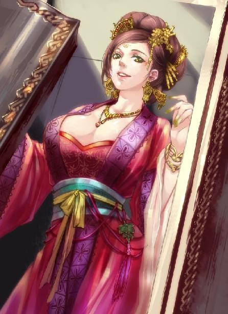
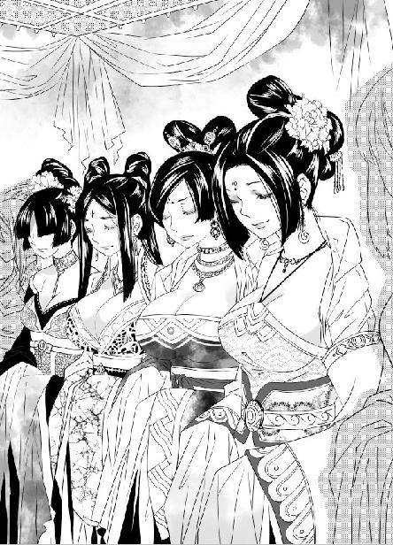
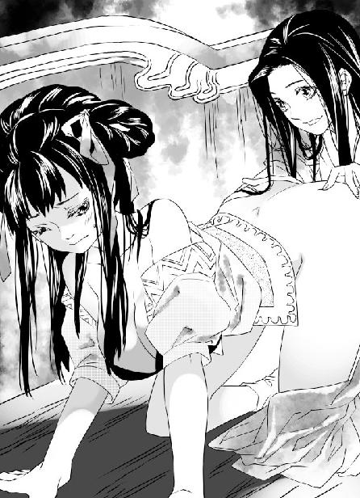

第24集·阴阳鱼踪
云水篇（4/4）
出版日期：2011-07-08
【本集内容简介】
与孟非卿联手直捣黑魔海在晴州的老巢，大破贼众还搜刮到不少金铢，解了鹏翼社的资金短缺窘境。
程宗扬生起疑惑：如今黑魔海如乌合之众，却有一些年轻教众修为甚深。难道主事者藏有何种秘典，足以快速制造高手？
蔺采泉寻上门，虚情假意地威吓他不得介入太乙真宗内部夺权，引得秋少君执意上龙池一问究竟。
程宗扬在晴州与乐明珠再次相逢，小紫使计诱来小香瓜，亮出贝齿狠咬一口，接着吸啜小香瓜的鲜血！这究竟是怎么一回事？
※ ※ ※ ※ ※

封面人物：梦娘（赵媛）

插图：无忧宫傀儡姬

插图：乐明珠、小紫
云母石制成的香盘中，一支深栗色的线香缓缓燃烧，丝般纤细的烟雾缭绕着袅袅升起。
忽然一股劲风袭来，烟雾弥散。堂上风雷大作，程宗扬精赤上身，双刀呼啸飞出。随着肌肉的牵动，汗水从他轮廓分明的胸膛不断飞溅开来。
在他对面，一个三十来岁的汉子左手持盾，将他的攻势一一封死，右手单刀不时攻出，迫使程宗扬回刀防护。
程宗扬体内真气游走，双刀犹如虎狼，不停撕咬着对手的防线。一滴汗水从他鼻尖淌下，在落到胸口的一刹那，对面的盾牌忽然一侧，藏在盾后的单刀抓住他一丝疏忽，从他双刀之间挑入。
那滴汗珠被刀锋斜斜切开，单刀风一样避开他的双刀，疾掠咽喉。程宗扬腰身一扭，向侧方跳开，本来已经散乱的双刀猛然一收，左刀准确地劈在单刀刀尖上，右刀劈在单刀刀锷寸许的位置。
双刀以截然不同的方向同时劈中单刀，强劲的力道使单刀刀身为之变形。对面的汉子手臂剧震，眼看单刀要被程宗扬的双刀夺走，忽然左肘一翻，缚在臂上的盾牌像一面铁砧般撞开程宗扬右手的钢刀，撤回军刀。
等的就是这时候！程宗扬暴喝一声，左手钢刀趁势下滑，劈在那汉子翻肘时暴露在盾下的左臂上。
程宗扬往后跳出一步，双臂一展，将双刀交叉插到腰后。肌肉隆起的胸口缓缓起伏，汗水像水一样流淌下来。
那名军士解下盾牌，向程宗扬敬了个礼，然后退到一边。若不是程宗扬劈出时用的刀背，自己的手臂便废了。
孟非卿点了点头，“有些长进。”
“老大！”程宗扬叫道：“天天当靶子给你们打，也不教我几门绝技，你也太小气了吧！”
孟非卿讶然道：“绝技？”
程宗扬气哼哼道：“还装呢！别人遇见高人，不是能得些秘宝，就是能混两门绝技傍身，修为唰唰向上升。哪像我这么倒霉，除了挨打还是挨打。”
“你想要什么？”
程宗扬精神一振，“我这人不挑剔，有什么玄功绝技之类的，随便给个一两门就行！神兵利器也可以啊，你看我都混这么久了，用的刀还是十几个银铢一把成批买的，拿出去都没面子。”
“说到玄功绝技，你的九阳神功和太一经难道不是吗？”
程宗扬道：“除了力气大点，跳得远点，这两样感觉没什么用。有没有什么能让我一下子跳到六七级修为，随便一招就能把对手灭掉那种的？”
孟非卿笑道：“你若学会这种功夫，千万要拉兄弟们一把，让我给你磕头拜师都行。”
程宗扬气道：“不想教，你就明说好了。”
孟非卿忽然道：“你现在有四级修为了吧？”
“差不多吧。”
“你什么时候进入四级的？”
程宗扬想了想，“有一两个月了。”
“你知道我进入四级，练到你这种水准用了多久？”孟非卿道：“我四岁学艺，二十三岁那年才进入第四级。到你这样的修为，足足用了三年。”
孟非卿道：“九阳神功和太一经都是顶尖神功，老孟没有什么好教你的。你欠缺的只是临敌经验和时间。时间我给不了你，只好多花些心思在临敌经验上了。”
说着他站起身，解下外衣，做了做扩胸运动，“还有两刻钟，正好上一堂急救课。来吧！”
程宗扬正在思索，听到这话立刻急了，“孟老大！我已经打了三场，总该让我歇一下、喝口水吧！”
“天真！”孟非卿厉声道：“战场上的敌人不会给你水喝！”
“干！你这是报复！”
孟非卿指骨捏得咯咯作响，狞笑道：“你觉悟得太晚了！”
※ ※ ※ ※ ※
程宗扬精疲力尽地倒在地上，身上的绷带缠得像不倒翁一样。孟非卿说到做到，结结实实给自己上了一堂战场急救课。
孟非卿和颜悦色地把一张大红帖子放在案上，“陶弘敏邀你赴宴。”
程宗扬有气无力地说：“赴什么宴？不会是鸿门宴吧？”
“他说前日和你聊得投机，邀你到城南胭脂巷一游。”孟非卿道：“好寻花问柳。”
程宗扬坐了起来，“你以为我不敢啊！”
他一把抢过帖子，看到上面写的“脂香粉浓，雪肤花貌……”不由一阵心动，小心问道：“孟老大，你们兄弟会不会逼我对小紫从一而终？”
孟非卿宽容地说：“大丈夫娶妻纳妾，理所当然。只要紫姑娘点头，随你纳多少呢。”
孟老大踢皮球的脚法真精湛，难怪是蹴鞠高手。程宗扬扔下帖子，重新躺回地上，赌气道：“不去了！”
孟非卿轻松地说道：“好说，我已经替你辞了。”
程宗扬打定主意，翻身坐起，“孟老大，我今天约了人。”
“哪里的？”
“黑魔海。”
良久，孟非卿晃了晃脑袋，“你给我出了个难题。”
“我知道你在筹备江州之战，这时候招惹黑魔海不是好主意。但昨晚的事，给了我一个很不好的感觉。”
“龙宸？”
程宗扬点了点头，“月霜是岳帅遗女的事并不是秘密，以前她在王哲军中还有人敢去行刺。如果她在晴州的事泄漏出去，来寻仇的只会越来越多。与其等着仇家上门，不如先打出去。”
程宗扬道：“不是我抱怨啊，你们岳帅也太能结仇了！天知道他仇家有多少，想找目标都不容易。不过黑魔海肯定不会放过这个机会。”
孟非卿捏了捏指骨。虞氏姐妹既然能找上门来，说明月霜在晴州的事已经不是秘密。说黑魔海不会来插一手，连他们自己也不信。从这方面看，程宗扬的担忧不无道理。
程宗扬道：“有件事我一直挺奇怪：大家都说黑魔海当年被岳帅扫荡得干干净净，究竟是真是假？”
“黑魔海当年能够从岳帅手下逃生的不超过五人，这十余年保命还来不及，哪里有本事再来挑衅我们星月湖？”孟非卿道：“当日你从南荒带着紫姑娘回来，小狐狸赶去见你，说到三弟被黑魔海暗算，我们兄弟大吃一惊。后来小狐狸和你两次潜进宫内，探出黑魔海的踪迹，我们兄弟便放下手边所有事情赶至建康，最后在京口截住黑魔海的人。”孟非卿停顿了一下，“结果你也知道了。”
京口一战，星月湖八骏除了死在南荒的谢艺和湖上鏖战的萧遥逸以外，其余六人全数出手，结果黑魔海吃了大亏，连幽长老也被砍掉脑袋，没有一人能赶到玄武湖支援王处仲。
程宗扬道：“你觉得他们与以前比怎么样？”
“霄壤之别。”孟非卿道：“黑魔海以往作风霸道强硬，连岳帅的面子也不卖。虽然狂妄了些，但颇有些实力。如今这些更像是乌合之众。”
“我在南荒也和他们打过交道，”程宗扬道：“黑魔海可以调用的人手不多，却四处伸手，好像正急于扩张势力。”
程宗扬已经下定决心，趁黑魔海还在等候东瀛来的飞鸟上忍，先下手为强。
当年岳帅剿灭黑魔海，黑魔海翻过身就立刻下手暗算谢艺。双方仇深似海，这场争斗只有一方全盘覆没才能结束。如果错过这个机会将带来无穷后患。
“我主张对黑魔海出手，基于三个理由。”程宗扬道：“第一，黑魔海正在扩张期，实力还不十分雄厚，现在下手比他们坐大之后再收拾容易。第二，黑魔海第一次出手就害死谢三哥，目标显而易见。第三，拔掉黑魔海在晴州的窝点也是一个警告。谁想来找月姑娘麻烦，都去称称自己的份量够不够黑魔海的水准，会免掉不少麻烦。”
孟非卿摸着下巴上浓密的胡须，“什么时候？”
程宗扬道：“申末酉初。”
“岛上情形如何？”
“还不清楚，不过我有个主意……”
孟非卿听他说完，摇了摇头，“不妥。假冒他人这种事，可一不可再，你孤身入岛，风险太大。”
程宗扬笑道：“假冒身份的不是我。孟老大，这事要你帮忙……”
孟非卿听完大笑，“好主意！不过要做得逼真还得一个人——把你的新罗女奴借给我用用，怎么样？”
程宗扬立刻道：“不借！”
孟非卿大手重重落在程宗扬肩上，“想歪了吧！我孟非卿找女人还用打你的主意？嘿，你还真小气，一个捡来的奴婢还攥得那么紧。晴州那些巨富豪门拿来待客的奴婢都是绝色处子。”
程宗扬笑眯眯道：“孟老大，你这话要让月霜听见，立刻就是腥风血雨。”
孟非卿用赞赏的口气道：“说到月姑娘，真是聪明天生，行军打仗一点都不外行！这回我们算是捡到宝了！”忽然他皱起眉，“有件事挺奇怪，昨天我瞧见月小姐衣服都缝着，是不是有什么……”
程宗扬咳了一声，“时间不早了，咱们赶紧商量一下行事的细节！”
※ ※ ※ ※ ※
鱼无夷穿过长长的甬道，踏进有些简陋的房间。
房间很空，除了一张巨大的桌案再没有其他陈设。那个女子站在书案前，背对房门微微垂着头，光洁的玉颈像天鹅般柔美而优雅。一切都和自己第一次见到她时一模一样，似乎永远不会改变。
她静静站在那里，优美的身体散发着温暖的香气。不只一个人表示过，无论在外面经历了怎样的惊涛骇浪，每次看到这个背影都会感觉宁静而安详，即使失败者也会重新充满信心。
然而鱼无夷却感到一种无形的压力，似乎每接近一步，自己就更渺小一分，身体变得更低，一直低到尘埃中去。
鱼无夷眼中露出复杂的神情。六岁时便展露出过人天赋，十五岁被指定为泊陵鱼氏未来的家主，鱼无夷无疑是一个极端骄傲的人。如果一个月前有人告诉他，这世间有一个人，而且是个女人，远胜于他，能够让他钦服甚至害怕，鱼无夷只会嗤之以鼻，顺便用一剂能令人痛上十二个时辰的焚血散让说话的人清醒一下。
连鱼无夷自己也没有想到，自己会这么快又这么彻底地承认自己比不上一个女人。
听到鱼无夷进来，那女子没有回头。她面前的书案上整整齐齐堆着近百份卷宗。有的只有一行字迹，有的长达几十页，密密麻麻写满文字。书案一角燃着一支刻香，空气中飘扬着淡淡檀香。
来过这个房间的人都知道，剑玉姬每日以八支刻香为度，再重要的事也限制在三分之一炷香的时间内叙说完毕。没有特殊理由而逾时的，很难再踏进这个房间。
剑玉姬一手翻开卷宗，一手握着朱笔，几乎打开卷宗阅读的同时，朱笔已经开始在卷后书写。她身后站着六七个男女，都是二十岁左右的年轻人，左右分列两排。
左边一个男子皮肤苍白得像从来没有见过阳光，正低声说着什么。他的声音很轻，鱼无夷只断断续续听到“长安城……六扇门……郑九鹰的遗骸……”
剑玉姬似乎没有在听，她批阅卷宗的同时还在对右侧的女子口述一系列指令，是关于昭南火渎城的几件事。她声音很静，有种不带人间烟火气息的从容。即便左侧的男子还在叙说，也听得清清楚楚。
从房门到书案附近，鱼无夷一共走了五步。那女子在读完卷宗的同时也写完最后一个字，然后合起卷宗放在一旁，接着打开另外一份。
做这些事的同时，她的口述也正好停止。右边来自昭南的女子用一支墨笔将她说的记在袖上，然后退到一边。另一名女子上前，开始叙说来自临安的几则消息。
那女子一边批阅卷宗，一边听着临安城的消息，一边对左侧刚汇报完毕的男子说道：“长安御姬奴泉玉姬从广阳直下晴州，一路没有透出任何消息，已经引起六扇门的疑心。你通知长安，立即替她弥补漏洞。第一，否认郑九鹰本人与我们有关，同时暗示郑九鹰的出身不那么清白，让六扇门疑神疑鬼；第二，把线索指向皇图天策府，暗示泉玉姬因为出身新罗，引起熊津都督府不满，最好能迫使唐国军方表明对新罗的态度；第三，送两名说书艺人到长安光宅坊。”
肤色苍白的男子抬起衣袖，将她的指令一一记下，然后问：“说哪一段？”
那女子头也不抬地说道：“新罗女大破白头鹰。”
男子记在袖上，放下墨笔，不言声地离开。
“鱼公子。”那女子仍看着卷宗，头也不回地说：“请讲。”
鱼无夷暗暗吸了口气，然后道：“光明观堂的人已经到了晴州，在画桥湖落脚。同行一共六人，分别是鹤羽剑姬潘金莲、乐明珠、邓晶、穆嫣琪，还有两名仆妇……”
那女子一边在卷宗上写着，一边对那名来自临安的女子说道：“这件事你办得很好。葛岭方面暂时不要插手。贾师宪那里戒备森严，容易失手，你们盯紧廖群玉，看他什么时候去宝泉巷，见面的是与褚氏还是陶氏。”
鱼无夷不由自主地停下来，虽然已经见识过她的能力，但每次看到这一幕，鱼无夷仍本能地怀疑她是否真的在听。
“光明观堂到晴州办慈幼院并不重要。”
鱼无夷怔了一下才意识到她在对自己说话，只听剑玉姬道：“要紧的是明净雪为什么派出鹤羽剑姬？”
剑玉姬随手从成叠的卷宗间抽出一份，看也不看便交给临安来的女子。那女子微微躬身，悄无声息地退开。
鱼无夷稳住心神，“也许是因为西门？”
剑玉姬微微颔首，“他在五原已经犯过一次错，我们在晴州不能再错了。鱼公子确定在云水遇到的少女真是殇侯的人吗？”
“我以性命担保。”
“不用，我相信鱼公子的眼力。”剑玉姬拿起一张素纸，一边道：“事实上我已经接到殇侯手下的书信，邀我到夜影关见面。”
鱼无夷立刻反应过来，“这是个圈套。要见面，晴州尽可以见面，何必选在夜影关？”
“殇侯对我们巫宗心有疑忌，理所当然。”剑玉姬将刚写好的素纸递给他，“真不巧，飞鸟上忍也要到岛上拜访。我要去夜影关，身边又抽不出人来，还请鱼公子代为接待。”
鱼无夷接过素纸，上面的文字是写给巫媪的，说明东瀛来的飞鸟上忍由鱼氏的无夷公子招待。
鱼无夷知道挑选自己还有一个理由——自己同样出身海岛，熟悉倭人语言。他收起素纸，“那位飞鸟供奉呢？”
剑玉姬又打开一份卷宗，“临安下令封锁云水，飞鸟供奉担心上忍的船只被拦，三日前便去了夜影关。”她停顿了一下，“至于光明观堂，接到飞鸟上忍之后再来处置。”
鱼无夷不再废话，退开一步，“是。”
在两人交谈的同时，另一名女子也说完自己的事，鱼无夷因为与剑玉姬交谈，一个字都没有听到。剑玉姬却接口对那女子说：“金蜜镝告病已经是一个月前的事。迟则五日，快则三日必会重新出山，继续当他的车骑将军。”
那女子吞吞吐吐地小声道：“教尊赐了药……”
剑玉姬少见地一手支住额头，微微叹了口气。鱼无夷本来已该退出，但第一次见到这个神仙般的女子为难，不由放慢了脚步。
剑玉姬随即振作起来，“就按教尊的命令用药。教尊远见卓识，赐下仙药，只要金蜜镝一病不起，剩下霍子孟一人便容易处置了。”
“是。”那女子领命退下，接着又有人上来。
剑玉姬道：“有没有建康的消息？”
周围人彼此看了一眼，“没有。”
剑玉姬点了点头，继续拿起笔，一边听手下人汇报，一边口述指令。
鱼无夷悄悄离开房间，握着素纸的手掌微微有些出汗。
纸上清一色的蝇头小楷，比悦生堂精印的书卷还要整齐清晰，从头到尾一字不乱。自己曾经抄写过毒物经籍，想一字不错，必须全神贯注才能写得这样流畅。如果不是亲眼看到，他怎么也不会相信写下这些字迹的人还同时做着几件不相关的事，不仅件件条理分明、绝无错漏，而且看到、听到的每一件事都不会忘记。
与剑玉姬接触过的人，无一例外把她比为神仙中人，但他们接触的只是她优雅的谈吐、绝美的容颜、温和而亲切的态度。只有真正在她身边的人才知道她的非凡之处。即便那些年轻人都堪称英才，也不得不承认剑玉姬就像是拥有五个不同的灵魂，能同时处理五件不同的事情。除了惊人的记忆力、非凡的洞察力，还有无比机敏的反应力、严密的逻辑思维能力，以及令人匪夷所思的操控能力。
这个像神一样存在的女子，才是黑魔海奇迹般卷土重来的根本。
※ ※ ※ ※ ※
银亮的铜镜映出一张凶恶的面孔，额头两侧的头发髡去，露出光溜溜的头皮，鼻下贴着一撮小胡子，加上凶巴巴的眼神，十足是个倭贼。
程宗扬满意地放下铜镜，从泉玉姬手里拿过半截袖的武士服披在身上，再把三柄长短不一的太刀一一插在腰间。
泉玉姬伏在他脚边，美艳的面孔带着苍白的笑容，眼神惶恐中有一丝无法掩藏的惧意。
小紫褪下臂上绯紫色的珊瑚臂钏，取出两颗小小的宝石。两颗宝石只有指尖大小，一红一黄，色泽莹润。她拿起黄泉玉放在臂钏黄金缠绕的凹处，轻轻一握，黄泉玉泛起一抹金黄的光芒，悄无声息地嵌入臂钏内，与绯紫色的珊瑚融为一体。旁边的血如意仿佛被一股无形的力量吸引，流淌出火色红光。小紫拿起血如意，以同样的手法嵌在紧邻黄泉玉的位置，神情专注而认真。
程宗扬转过身，“死丫头，你看我这打扮怎么样？”
小紫撇了撇嘴，“丑死了。”
程宗扬挺胸凸肚，手按刀柄，气势汹汹地大喝一声：“八格！”眼睛努力挤成斗鸡眼。
小紫被他逗得笑了起来，“头皮那么白，一看就是刚剃的。过来，我帮你抹抹。”
程宗扬低下头，小紫调些颜色在掌心里揉开，抹在他光溜溜的头皮上。
小紫衣袖滑下半截，露出一截雪白的手臂，她手掌又软又滑，袖中飘来淡淡的香气。程宗扬抽了抽鼻子，“死丫头，你身上用了什么？味道好香。”
小紫在他头上推了一把，“别动。”
程宗扬鼻尖离小紫的胸乳不过半个手掌的距离，看着她胸前圆隆的曲线，不禁一阵心动。上次抱着她睡觉，还没摸到就被打断，也不知道她胸前那对小白兔是不是又发育了……
“好啦。”
小紫刚松开手，程宗扬忽然张开双臂将那具香软的玉体紧紧搂在怀中，狞笑道：“死丫头！看你还往哪儿跑！”
小紫丰隆的美乳高高耸起，衣衫下柔润的乳峰传来迷人的弹性。程宗扬禁不住露出大灰狼的嘴脸，张开大嘴朝她乳上亲去。
正得意间，耳边忽然传来银铃般的娇笑声。小紫笑道：“泉奴，老爷要吃你的奶呢。”
程宗扬抬起头，只见泉玉姬被自己抱在怀中，她罗衫半褪，露出胸口白腻的乳沟，脸上带着僵硬的笑容。
程宗扬悻悻道：“死丫头，一点面子都不给！”
小紫笑吟吟道：“泉奴最乖了，程头儿要吃奶就吃她的好了。”
“不跟你玩了！”程宗扬把泉玉姬推到一边，转身离开房间。
小紫用脚尖挑起泉玉姬的下巴，“泉奴。”
泉玉姬脸色愈发苍白。自从发现程宗扬并不是真正的东瀛忍者，泉玉姬一直在怀疑他的真实身份。但一想到那个可能性，这个杀起人来连眼睛都不眨的黑魔海御姬奴便丧失了所有勇气，宁愿一遍遍欺骗自己主人是黑魔海的高层，也不敢面对呼之欲出的可怕真相。
如果他真是黑魔海的敌人，献出魂丹的自己无论如何选择，未来的结局都将惨不堪言。
一墙之隔，秦桧从容不迫地整理着长须，然后拿起巾帕，仔细抹着修长的手指。
“会之！”程宗扬在外面喊了一声，推门进来，“咦？怎么披了这么宽一条袍子？”
秦桧也是一愣，指着程宗扬的发型大笑起来。程宗扬摸了摸脑袋，“没见过吧？土狗！喂，穿那么宽的袍子干嘛？”
秦桧分开外袍。只见那家伙外袍的夹层里插着十几支手臂粗细的竹筒，腰间同样插了一圈，竹筒分成五色，上面伸出棉制引线，活像一个人肉炸弹型的恐怖分子。
“我干！”程宗扬大叫一声，跳开一步，“奶奶的！你疯了！这么多大号花炮，不怕炸死你！”
秦桧道：“一点烟火而已，何足道哉。”
就算这个时代的火药威力不大，这么多花炮同时爆炸也够死奸臣喝一壶的。
程宗扬没好气地说：“我让你带两支备用，你带这么多搞烟花晚会啊——离我远点！”
秦桧洒然拉上外袍，一边道：“依公子吩咐，已经通知了雪隼佣兵团的敖兄弟和冯兄弟。”
程宗扬抱着手臂，双手拢在宽大的袖丈里，笑眯眯道：“拔掉巫宗在晴州的巢穴，殇侯那老家伙应该乐得合不拢嘴吧？”
秦桧微笑道：“只恨侯爷未能躬逢盛会。”
院子另一侧，臧修盘膝坐在堂上，手持长刀，在半人高的磨刀石上磨拭。在他旁边，几名星月湖军士各自整理武器装备，为即将到来的恶战做准备。
铜狮巷，雪隼佣兵团。敖润和冯源背着武器，打马奔出街巷，两人脸都绷得紧紧的，没有片刻耽误。
西马长街，鹏翼总社。孟非卿封好最后一笔金铢，交给手下的郭盛，拿起那对霸气十足的天龙霸戟，双肩一张收到身后，接着披上披风，一手推开大门。阶下来自星月湖的数十名军士昂然而立，挺拔的身形犹如标枪。
混元观外，一只瓢虫从田中飞起，晃晃悠悠飞向远方。秋少君拍了拍手掌，望着远飞的瓢虫，再按了按袖中的少阳剑，大袖飘飘地走入夕阳。
※ ※ ※ ※ ※
十月十三，晴州内海。
正在打坐的鱼无夷忽然睁开眼睛。他站起身，拉开门，望着天边绚烂如火的晚霞，一阵不安袭上心头。
鱼氏与黑魔海合作，是因为双方都面临光明观堂的威胁。擅长祛毒疗伤的光明观堂无疑是鱼氏的天敌，而鱼氏要进入六朝，第一个落脚点就是明州——光明观堂所在的明州。为此鱼氏已经暗中与光明观堂较量几次，都以失败收场。
于是接到黑鸦使者送来的书信之后，鱼氏第一时间做出回应，先后派出数名鱼氏子弟与黑魔海合作。鱼无疾在五原城意外身死，鱼无夷接过他的前期工作，才知道黑魔海为什么急于与鱼氏携手。
鱼无夷与剑玉姬约定，双方联手灭掉光明观堂之后，明净雪、燕姣然等人都交由黑魔海处置，鱼氏只要求把鹤羽剑姬带回泊陵就够了。
这一切，只等接到东瀛来的飞鸟上忍便可以着手进行。
※ ※ ※ ※ ※
绚烂的晚霞下，一艘双桅帆船驶过平静的海面。远远能看到船头挂着一面墨黑的旗帜，上面绘着八瓣菊花的图案。
看到约定的旗号，几个人随即从岛屿的房舍出来，前往码头迎接东瀛来的飞鸟上忍。
船只靠岸，放下舷梯。一个铁塔般的汉子昂然踏上码头，他穿着纯黑色的吴服，腰间插着三柄太刀，虽然额角髡过发，露出发青的头皮，仍然显得一派气宇轩昂。
前来迎接的是几个年轻人，当先一个脸容瘦削，穿着灰扑扑的长衣，眼睛狭长，脱落大半的眉毛又疏又淡。他打量了来人一眼，眼中迸出一缕寒芒，微微躬腰用倭语说道：“哈吉玛系代有楼希库！”
留在舱内的程宗扬心头一震。黑魔海出面迎接的竟然是鱼无夷。知道他与黑魔海沆瀣一气倒也罢了，但这小子居然会倭语！
化妆成东瀛忍者的臧修不慌不忙，他一手按住刀柄缓缓鞠了一躬，大模大样地直起腰。
鱼无夷稀疏的眉毛动了一下。来人的打扮与往来晴州的倭人相似，平常人很容易把他当成东瀛浪人，但落在他这个与倭人打过多年交道的行家眼里，处处都是破绽。
程宗扬不知道鱼氏所在的泊陵是倭人的交易聚散地之一，倭人从东瀛运来银砂，交换铁器、生丝以及铜铢，鱼无夷对倭人和倭语早已熟稔之极。
只看他的身材，自己还没见过哪个倭人像他一样高大雄壮，以至于身上的吴服似乎都小了一号，连宽松的肩幅也被他隆起的肌肉绷紧。
鱼无夷藏在袖中的手指挟住棘牙刃，面无表情地用倭语道：“你是哪里来的野狗！敢冒充东瀛忍者？”
听到他一连串的倭语，程宗扬暗叫糟糕。临行时他给臧修恶补过几句，但他自己懂的不多，能教的仅限于“很好、谢谢、请多关照”，这么一大篇下来，臧修要能听懂才出鬼了。
臧修不动声色地点了点头，拖长声音道：“哟——西——”
鱼无夷瘦削的脸上露出笑容，客气地伸出手。臧修在晴州混过，知道有些外族见面以握手为礼，于是也伸出手来。
程宗扬大叫不好，随即发出一声尖啸。臧修手刚伸到一半，硬生生停住，闪电般缩回，反手擎出腰间太刀斩在鱼无夷指上。
鱼无夷手指一翻，亮出那柄长不盈手的棘牙刃，格住臧修的太刀。紧接着舱中传来一声暴喝：“扔掉！换刀！”
臧修想也不想便一把掷出太刀，反手又拔出一柄，双手齐握，兜头朝鱼无夷头上劈去。
抛落的太刀还未落地，银亮的刀身便化为灰色。臧修叫道：“好小子！竟然是玩毒的！”说着他避开鱼无夷的指爪，斜刀朝他胸腹劈去。
鱼无夷用棘牙刃挡住刀尖，接着弹出一缕粉末，身形一闪，退出丈许。这几下兔起鹘落，鱼无夷身边的黑魔海教众还没反应过来，两人已经交手数招。
星月湖毕竟有备而来，随着程宗扬那声暴喝，十余名精壮汉子从舱中掠出，风一般抢上码头。
这些军士一个个龙精虎猛，相互间配合熟稔之极。他们一上岸便分为三人一组，一名使用矛斧之类长兵的军士在前，两名使用短兵和护具的军士在后，结成品字形的小型战阵。现身之后，他们并不急于破敌，而是抢先占据了码头的有利地势。
接着又有几名军士在船上出现，亮出强弓劲弩，居高临下将方圆百余步范围都控制在射程之下。与此同时，又有几人跃到旁边的船只上，钻入船舱。只听得“砰砰梆梆”的凿船声响起，片刻间，两艘原本停靠在码头的船只便被凿穿，船身开始下沉。
这一切几乎发生在同一时间，船只靠岸不到半刻，局势已经大变，来自星月湖的军士牢牢控制局面，开始往岛上突击。
鱼无夷身边带着四名黑魔海属下，眼看退路要被截断，其中三人立刻放弃码头，登岸戒备，另外一人则拔刀攻向臧修，阻击他的追击。
“呼”的一声锐响，一支长矛破空而至。那支长矛仅锋刃就有尺许，弯曲如蛇，此时以长攻短、以强对弱，顿时将那名随从的弯刀荡开。紧接着一支箭矢从船上射来，抓住他弯刀荡开时露出的破绽，一箭正中额头。那名黑魔海属下头颅仿佛被重锤击中，猛地向后仰去跌下码头，鲜血随即染红水面。
鱼无夷衣袖一挥，一抹宛如云霞的暗红薄烟从袖中散逸出来，在身前形成一道屏障。臧修太刀劈出，被劲风卷起的毒烟不住变幻形状却聚而不散，反而使刀身蒙上一层灰色。
鱼无夷隔着毒烟挑开臧修的太刀，刚要飞身后退，一柄重斧从背后横扫过来。鱼无夷依仗毒烟屏障，回臂旋身，棘牙刃接连击在斧枪、斧轮和斧柄上，挡住这狂猛一击，随即陷入苦战。
伏在舷窗处的程宗扬回过头，只见孟非卿正靠着舱壁闭目养神。
“孟老大，外面已经打起来了，怎么还不动手？”
孟非卿闭着眼道：“什么事都要我亲自出马，我们星月湖也不用混了。”
“老大还真笃定。”程宗扬道：“咱们运气真好，碰到的第一个就是鱼家的无夷公子。那小子浑身是毒，你就这么放心？”
孟非卿若无其事地说道：“让你瞧瞧我们星月湖是怎么打仗的——仲玉！”
旁边一名军士上前挺起胸，双腿一并，向孟非卿敬了一个军礼，闪身掠出船舱。他从船上跃下，还未落地便探出拇指在虚空中一捺。一缕火线从他指尖流星般飞出，射入毒烟的刹那立即火光大作，爆成一团庞大的火球，瞬间将飘散在空气中的毒烟烧得干干净净。
鱼无夷身体像蛇一样扭动数下，避开火焰余波，他一把捞起旁边那具被箭矢射穿额头的尸体，五指如钩穿入他的胸膛，硬生生将心脏挖了出来。接着指上一紧，还未凝固的鲜血雨点般迸射出来，朝那名军士淋去。每滴血迹都乌黑如墨，散发出令人作呕的恶臭。
那军士两手食指、中指、无名指、小指相扣，拇指左右分开，念出一声法咒。一道柔和的光线从他手中射出，飞溅的乌血与光线一触，像被清水洗过一样变得鲜红，连地上那把被臧修抛弃的太刀也褪去暗灰的颜色，重新散发出金属光泽。
程宗扬看看旁边的冯源，这位平山宗的大法师嘴巴张得能塞下一支船锚，眼睛直勾勾盯着外面，已经看傻了。
冯源修的也是火法，比程宗扬这个外行更明白其中门道。那名军士的手段至少高出自己两级，如果放在晴州，保证各个佣兵团抢着来要。
程宗扬拍了拍他的肩，对孟非卿道：“孟老大，看不出来你手下什么人都有啊。他这些年不会也在你们鹏翼社牵马赶车吧？”
“他在明州给人算命测字。”孟非卿道：“因为算得不准，被人砸过好几次摊子。”
程宗扬失笑道：“还有这种事？”
孟非卿道：“他是阳钧宗出来的，哪儿懂算命？头几年不懂规矩，巴掌可没少挨，后来躲到龙川生意才好了些。”
冯源这才合上嘴，叫道：“龙川的铁口神算匡仙长？我说看起来怎么眼熟呢！这可是活神仙啊！”
程宗扬讶道：“你认识他？”
“可不是嘛！匡仙长一天只算三卦，卦术简直神了！去年我在龙川还见过他！有四个书生考秀才，找仙长算命。那时他留着长须，一百多岁了还又黑又亮，那仙风道骨，啧啧……他怎么把胡子剃了，头发也剪短了？看起来……”冯源忽然紧张起来，压低声音道：“匡仙长不会是炼成仙丹，返老还童了吧？”
孟非卿想了想，“老匡今年有三十四……三十五。嗯，差不多是这个岁数。”
程宗扬笑道：“冯大法，看走眼了吧？”
“怎么会呢！我亲眼见的！”冯源道：“四个书生说完，匡仙长一言不发，只比了一根手指，果然只有一个中的！大伙都说他是活神仙，实足年龄怕有一二百岁。”
秋少君一直安静地坐在一旁，这会儿也笑了起来，“我明白了，匡先生卖的是口术。他比一根手指，一个上榜的就是一个能考中；两个上榜的就是一半能考中；三个上榜的就是有一个考不中；四个全上榜就是一起考中；如果全落榜就是一个都考不中……”
没等他说完，众人都笑了起来。孟非卿莞尔道：“老匡挨了好几年打才学会这招，倒被你一口道破。”
冯源还要辩解，敖润一把拉起他，“别咕叨了！老程够意思，给咱们兄弟一个替老张报仇的机会，还磨什么牙呢！”
冯源“哎”了一声，拿起几道符收到袖里，一边嘀咕道：“真是匡仙长啊？这回有福了！”
秋少君站起身，“我也去吧。”
鹏翼社的袭击使岛上陷入短暂的混乱，星月湖军士势如破竹地占据码头，攻上岛屿，直到接近房舍才遇到真正的抵抗。
鱼无夷摆脱斧手的追击，飞速朝那几间木制的房舍掠去。臧修双手各持一柄狭长的太刀，如影随形地跟在后面，刚才退到岸上的三名随从已有两名倒在他刀下。眼看鱼无夷就要逃入房舍，臧修扬手掷刀朝他背心笔直飞去。
房舍中一只手掌凭空伸来抓住刀锋，接着随手一拧，将那柄精铁打造的太刀生生折断。
一个穿着青衣的少年出现在房舍前，他年纪很轻，嘴巴周围只有一圈淡淡的茸毛，看起来不过十六七岁，那双手却布满厚厚的硬茧，就像在掌上下过数十年苦功一样。他抛下断刀，握住刀锋的手掌没有留下半点伤痕。
臧修抛下太刀，从背后拔出他的宽脊战刀，沉声道：“好手段！再接我一刀试试！”说着一招霸王挑鼎，刀锋由下而上，挑向少年的腹胸。
少年木然看着刀锋，突然双手一合，像两块铁砧牢牢夹住刀身，发出金属撞击般的声音。
臧修野牛般的胸膛肌肉隆起，纯钢打造的战刀不堪重负地微微变形。忽然他暴喝一声，刀势再展，从少年掌中硬生生递出半尺。
那少年现身后就一言不发，此时忽然化掌为拳，双拳铁锤般砸在刀上。臧修雄躯一扭，借助腰背的力量横刀扫来，使出自己的绝技雷霆战刀，短短尺许的距离间立时风雷大作。
鱼无夷眉角微动。他方才急于脱身，没有使出压箱底的功夫与这汉子力拼，此时见到他的刀法，才知道自己能逃到此处多少有些侥幸。
“这厮假冒东瀛忍者！”鱼无夷叫道：“青貙！杀了他！”
那少年目露奇光，双臂一举，用双肘挡住刀锋。臧修长刀疾落，雷霆战刀发出霹雳般一声震响，少年青衣由袖至胸寸寸碎裂，露出一具可怖的身体。
他的身躯呈现出金属般的苍青色泽，皮肤与骨骼之间几乎看不到肌肉，只有无数外露的筋结，宛如一条条巨蟒盘绕在青铜色的皮肤下，又像一道道铁索在肩、臂、胸、肋上交错纵横。
程宗扬失声道：“这是什么怪物！”
听到臧修使出雷霆战刀，孟非卿已经睁开眼睛。他向舷窗外望了一眼，眼神顿时变得锋利，“龙筋鹤骨！”
龙筋鹤骨是顶级的外家硬功，练成之后周身筋骨如同铁石、不惧刀斧，身体任何一个部位都能成为杀人利器。但龙筋鹤骨修炼远比金钟罩、铁布衫艰难，而且禁忌极多，因此修习者极少。能练成龙筋鹤骨之人无不是心志坚毅，能够承受极大的肉体痛苦，同时欲望淡薄的苦修者。
孟非卿沉声道：“龙筋鹤骨修到这种水准至少要二十年功夫。这厮从娘胎里开始练也未必够二十年！”
程宗扬道：“你们以前和黑魔海交过手，他们是不是有什么速成的办法？”
“能让功力倍增的霸道法门也不是没有，但那些法门多半会折损寿命，不到生死关头，不会有人施展。”孟非卿冷冷道：“即便黑魔海的人，也是不肯死的。”
黑魔海出来应付场面的都是年轻人并不奇怪，毕竟他们被岳帅清剿过，能撑场面的不是年轻人，就是古冥隐那样招揽来的供奉。但这些年轻人都是高手，而且功夫越来越高，这就很古怪了。难道他们找到了什么能够提升功力的秘宝？
程宗扬压下疑问，“老大，碰到硬茬了，你还不出手？”
“无妨。”孟非卿道：“臧修应付得了。”
臧修一连数刀都被青貙举手投足间轻易破解，他手中的雷霆战刀虽如同惊雷狂殛，却无法在少年身上留下一道刀痕。臧修杀得性起，索性扯下那件不合身的吴服，露出铁塔般的身躯，一边抛下战刀，赤手空拳与那少年的龙筋鹤骨硬撼。
两人以强对强、以坚攻坚，虽然都是徒手，声势却如同两个重逾千斤的铁甲铜人碰撞在一起，发出震耳欲聋的金铁交鸣声。
房舍中冲出十余个人，依托廊柱、台阶与星月湖群雄交锋。他们身手不弱，随便拉出哪个也能打上几百招，但星月湖军士根本不与他们缠斗，一人强攻，两人策应；一组遇阻，随即又上来一组。虽然人数不及黑魔海两倍，但严密的配合和高效的协作，使他们形成三人围攻一人，甚至五人围攻一人的局面。
以最快的速度，最有效的攻击，最简单的招术解决对手。在程宗扬看来，这帮汉子简直就像一台无坚不摧的压路机，把一切对手直接碾平。
当然，这一切都是以实力为基础。仔细看去，能看出星月湖军士严谨分明的组织结构：他们以一组三人为最基本单位，每三组有一人单列出来作为基层指挥者。如果自己没有记错，这是一个班的标准配置。在这样一个班中，长短兵器一应俱全，能随时根据对手兵刃的不同调整攻击手段。三个班组成一个排，随着攻击不断变换阵形，由各班轮流担任主攻，在不停歇的进攻中，以最大可能节省每个人的体力。
可惜鹏翼社的人手大都陆续前往江州，俞子元也奉命运载同袍，未能参战，再加上还要安排人手去夜影关监视剑玉姬，孟非卿能动用的只有一个排，无法看到他们大规模作战的雄姿。幸运的是一连专职术者匡仲玉及时赶到，这个在龙川靠招摇撞骗为生的算命先生这时露出他凶悍的一面。他两手齐出，阳钧宗的流星火、飞火轮、乾阳诀、明光术……诸般术法层出不穷。这些来自一连的军士固然如虎添翼，鱼无夷也投鼠忌器，无法随意使用毒物。
敖润他们有样学样，敖老大当仁不让，一马当先在前主攻，冯源和秋少君一左一右跟在他身后。这三人武功、招术、性格都大相径庭，出手时也不是一般的热闹。往往敖润先顶住一名对手，狂呼猛斗，在前打生打死；冯源在后面一边鬼叫，一边手忙脚乱地拍出符箓；秋少君客客气气地在旁边打招呼：“敖队长，这一剑我来可以吗？”
“干！”敖润大骂一声，举刀猛砍，对面那名黑魔海对手的弯刀却莫名其妙脱手落地。原来是秋少君老老实实一剑捅过去，刺中对手脉门。
敖润一刀劈了个空，险些砍到冯源。他急忙斜肘撞在那人腋下，将他一排肋骨撞碎，一边大叫：“我就日了！你怎么不朝要命的地方扎！”
秋少君一手拢在嘴边，小声道：“我告诉你，你别跟别人说啊——我立过誓，不杀生的。”
敖润眼睛瞪得如铜铃大小，像看怪物一样看着他，一刀把地上的黑魔海帮众劈死，“我靠！”
冯源使劲甩着黏在手上的符箓，一边道：“我说小子，你到底是和尚还是道士？”
秋少君诧异地问：“你们没见过吃素的道士吗？”
敖润和冯源异口同声道：“没有！”
秋少君挺了挺胸，“我就是——真的！”
星月湖的军士已经攻到阶下，在他们身后倒着七八具尸体，而他们付出的代价仅是五人受伤，只有一人被对手濒死一击、刺穿大腿，伤重退出战斗。
鱼无夷早已无影无踪。他只是受邀来的客卿，犯不着为黑魔海送命。黑魔海唯一的强手只剩下那名叫青貙的少年，他独自守住房舍大门，一身龙筋鹤骨的横练功夫筋结外露。
他对面的臧修也不遑多让。臧修精赤的上身肌肉虬结，起初皮肤淡如黄铜，随着真气运转，色泽越来越鲜明，最后仿佛鎏金般金光四射，宛如一尊金甲天神，与青貙的龙筋鹤骨酣战不已。
两人拳脚相撞间金声大振，程宗扬几乎怀疑他们再打下去能迸出火花来，甚至掉几块金渣也有可能。
“这是什么功夫？金钟罩吗？”
“不错。”孟非卿抱着肩道：“臧修的金钟罩难得遇上龙筋鹤骨，让他们好好斗一场。”
“该我出面了吧？”程宗扬道：“一会儿人都被你们杀光了，想演戏也找不到观众。”
“不用急。”孟非卿道：“黑魔海在晴州的巢穴不会就这么点实力。”
程宗扬耸了耸肩，“那你们慢慢打，我去看看小紫。”
依照孟非卿的意思，原本不想让小紫跟来，免得冒险。但死丫头眼泪汪汪地低下头，孟非卿立刻改变了主意。
不过两人很有默契地没有把这件事告诉月霜。那丫头要来了，恐怕冲在最前面的就是她，想拦都拦不住。
小紫悠闲地躺在一张摇椅上，泉玉姬像婢女似的屈膝跪在椅旁，轻柔地替她捶着腿。
还是忍者打扮的程宗扬拢起双手，“外面打生打死，你倒轻闲。”
小紫小小地打了个呵欠，慵懒地说道：“黑魔海这么快就输了，一点都不好玩。”
程宗扬左右看了看，“会之呢？”
泉玉姬道：“秦爷已经上岛了。”
自己一直盯着岸上都没看到秦桧的踪迹，真不知道死奸臣怎么上的岸。那家伙到现在都没有出手，多半在哪儿藏着，准备给巫宗来个狠的。程宗扬这会儿有些后悔不该支走剑玉姬，凭自己手头的实力，把她一并干掉也不是梦想。
泉玉姬微微侧过身，露出臀腿优美的曲线。程宗扬知道她在害怕。星月湖显露的实力完全出乎她的意料，一个臧修就能与黑魔海精心培养的新生代高手斗得难解难分。星月湖像他这样的上尉连长至少有二十四个，况且上尉以下的中尉、少尉，甚至军士中也藏龙卧虎。这种实力难怪能横扫当年的黑魔海。
但泉玉姬的害怕还来自另外一方面。黑魔海这十余年间已经脱胎换骨，与以往专注于巫法修炼的教派大相径庭。星月湖这些虎贲之士纵然能在战场上所向披靡，并不意味着他们就是最后的胜利者。自己任何一个选择都可能沦落到万劫不复的境地。如果不想被当成无用的垃圾处理掉，泉玉姬只能尽力展现自己的价值。而作为奴婢，唯一有用并且对主人不具备威胁的，就是她的肉体。
大战当前，这点色诱当然起不了效果。但程宗扬也在犹豫，究竟是冒险带她上岛？还是安全起见，把她留在船上，先收拾完岛上的黑魔海教众，再来了结这个可能的后患？
暮色四合，岛上已经伏尸处处，只是距离太远，生死根无法感应到岛上弥漫的死亡气息。然而可以想象，一旦自己踏足岛上，立刻会被浓郁的死亡气息包围。
黑魔海教众只剩下两三人苦苦支撑，他们已经退到房舍前，背后便是黑沉沉的大门。重斧再度劈出，震飞了一名黑魔海教众的弯刀，接着斧手旁一名拿着马刀的军士游身向前，将他逼得退入门中。
忽然一抹黑光从门中涌出，将两名黑魔海教众拦腰劈断，接着斩在那名军士持刀的肘上。
马刀带着一截断臂溅血飞开。那名军士牙关咬紧，面无表情地后退一步，一手握住断臂。旁边立刻有人过来替他止血裹伤，同时填补他留下来的空缺。
一名穿着粗黄葛衣的仆妇出现在门口。她四十多岁年纪，粗壮的身材又高又大，相貌丑陋，脸颊上一道长长的刀疤几乎将鼻子砍成两半，眼睛像蛇一样细小而黄浊，更显得凶狞丑怪。她头发蓬松，手中拿着一柄长近五尺的长刀，刀锋平直，刀头钻了一个圆孔，却是一柄农家用的铡刀。
“哪里来的鼠辈！敢闯我黑魔海！”仆妇喉咙似乎受过伤，嘶哑的声音像锯条锯过碎玻璃一样，让人毛骨悚然。
程宗扬认出她便是那日和鱼无夷同行的仆妇，看她的身手，绝不是平常奴仆。
孟非卿眼睛缓缓亮起，他十指交叉，活动了一下手指，指骨发出一串脆响。
正在缠斗的两条身影蓦然分开。臧修脸上挨了一拳，唇角淌出一串血沫，身上却全无异样。他盯着那名仆妇，抬起金光灿灿的右臂横放胸前，沉声道：“日出东方，唯我不败！”
仆妇细小的瞳孔微微一缩，像蛇一样收紧，神情愈发狰狞。
臧修踏前一步，声如洪钟地喝道：“岳帅麾下星月湖大营！黑魔海妖人气数已尽，还不受死！”
“原来是岳贼的余孽！有本事便来吧！”仆妇向门中退去，一边嘶哑着喉咙厉喝道：“青貙！”
那少年神情木然地立在房舍大门处，听到仆妇的召唤，他骨骼上纠缠的筋结突然活动起来，像无数巨蟒在皮肤下游动。
臧修立刻变了脸色，“天龙解体——退！”
周围的军士飞身后退，首当其冲的臧修却不退反进。他像一尊金佛般挺直身躯，双掌合什，高声念诵道：“大悲天罗，三世诸佛！与一切众生乐，拔一切众生苦！揭谛揭谛，波罗揭谛！”
少年躯体上的筋结膨胀起来，他昂首发出一声怪啸，紧接着一声巨响震彻天地。砖瓦、碎石、木屑……雨点般四散激射，连一人合抱的廊柱也在狂飙中拔地飞起，青石砌成的台阶寸寸碎裂。巨大的冲击力覆盖了方圆十几丈的范围，连靠近房舍的尸首都在一瞬间化为齑粉。
旁边几名星月湖军士被这股以精血化成的狂飙卷住，肢体连同手中的兵刃都仿佛受到重击，鲜血从口鼻间溅出，随即又被狂风抹去。匡仲玉抖手打出一道灵符，张开一个直径丈许的半圆形白色光球，将附近几名同伴笼罩其中。但这道光幕在狂飙中只支撑了片刻，旋即光芒一闪，消失无痕。
秋少君张开大袖把敖润和冯源罩在身后。劲气割体欲裂，三人连说话的力气都没有，只能拼尽力气死死支撑。
狂飙中，一团金黄的光芒分外夺目。臧修的金钟罩就像一道屏障，将天龙解体狂猛的冲击力硬生生阻挡下来。正是他这一挡，才使众人受到的冲击减至最低，让匡仲玉等人捡了条性命。
狂飙仿佛没有穷尽般的不断攀升，臧修身上金黄的光芒渐渐黯淡下去。忽然两道劲气蛟龙般破开狂飙，“叮”地钉在风眼正中。几乎震破耳膜的狂飙声一瞬间停止下来，天地间宁静得仿佛没有任何声音。
秋少君放下衣袖，一面吐着砂砾，一面心有余悸地说：“好厉害！”
孟非卿缓步走来，威猛无俦的天龙霸戟钉在青貙最后站立的位置，那个古怪的少年已经骸骨尽灭，找不到一丝痕迹。
眼前的景物面目全非，整座房舍荡然无存，连一砖一瓦都没有留下，以青貙刚才站立的位置为中心，形成一片方圆十几丈的白地。只见地上露出一道狭长的裂缝，深不见底。
孟非卿手一张，两支天龙霸戟跳回掌中，接着他腾身跃入洞中。
程宗扬拉了拉衣服，“该我出场了！泉贱人，来吧！是死是活就看你自己了！”
※ ※ ※ ※ ※
“那个仆妇姓巫，我们都叫她巫嬷嬷。”
黑暗中，泉玉姬的声音轻得几乎听不到，“闻姨、齐姐、巫嬷嬷，是仙姬最得力的三个手下。巫嬷嬷专管调教各地送来的豢奴。”
程宗扬竭力辨认着臧修等人留下的标记，一边道：“豢奴是什么？”
“黑魔海分内、外两堂，内堂是教尊嫡传，外堂是半路加入的高手，如今由仙姬管理。再往下是有职份的教众，比如传信的黑鸦使者和奴婢这种在各地做事的御姬奴。再往下便都是奴仆。教中奴婢也分为几级，最低一等的就是豢奴。”
“豢奴是教中豢养的奴婢，比寻常奴婢更低一等。通常是黑魔海的仇敌，擒住后没有杀死，豢养来供人消遣使用。因为那些豢奴大都对黑魔海仇深似海，需要抹去她原有的神智，让她们对以前的仇敌唯命是从，因此调教时十分危险。听说巫嬷嬷因为调教一名豢奴，被斩成重伤，险些送命。”
“那个青貙呢？他属于哪一类的？”
泉玉姬犹豫了一下，“据说教尊从太泉古阵得到一件秘宝，挑选了九名孤儿自小培养。因为他们无父无母，都用颜色来起名，号称九御。”
程宗扬想起在建康遇到的墨狼。青貙、墨狼——那家伙应该也是九御之一。按年龄算，这九人应该都很年轻，但青貙的龙筋鹤骨，再过几年恐怕臧修也敌不过他。
“看他年纪不大，为什么会有五级修为？”程宗扬道：“还有，一个青貙就这么厉害，黑魔海怎么只培养了九个？干嘛不培养一二百个？”
“培养青貙这种高手并不简单，从选材到培育要花很多力气。之所以是九人，是因为教尊要压过星月湖八骏。”
看来岳鸟人真让黑魔海刻骨铭心，连人数也要硬压过他一头。黑魔海能这么快死灰复燃，与那件秘宝想必有很大关系。
程宗扬道：“那件秘宝是什么？”
“奴婢只是听说，似乎叫玄秘贝。”
玄秘贝？这不是武二郎说的四大假吗？澄心棠、玄秘贝、灵飞镜、珊瑚铁。后两件自己见过，玄秘贝在黑魔海手里，还剩一件澄心棠不知是什么东西。
剑玉姬虽然不在，但能除掉巫嬷嬷，斩断她一条左膀右臂也不虚此行。程宗扬回过头，“这会儿装这么老实。说吧，还有什么瞒着我？”
泉玉姬摘下面纱，露出美艳的面孔，柔声道：“奴婢不敢欺瞒老爷。奴婢的魂丹已经被老爷吞下，所思所想都瞒不过老爷耳目。”
“你想的我也能知道？”
魂丹还能控制御姬奴思维？看来这贱人真有不少东西瞒着自己。
“老爷把真气送入奴婢的窍阴穴。”
程宗扬按了按泉玉姬脑后，“这里吗？”
窍阴穴是人体要害，轻则致残，重则丧命。泉玉姬一动也不敢动，低声道：“是魂丹上的。”
程宗扬把一丝真气送入魂影脑后窍阴穴的位置，一种奇妙的感觉扩散开来。真气形成一道桥梁，将面前的御姬奴、窍阴穴中的魂影和自己这个操纵者连接在一起。
那种感觉超越听觉、视觉、嗅觉、味觉和触觉，仿佛直接深入对方灵魂，不需要语言和文字就能直接交流。
程宗扬心念微转，送过一个念头。泉玉姬立刻往前踏了一步，然后跪落、俯下身体，像一只温顺的雌兽般翘起浑圆的臀部，对着主人。
程宗扬笑了一声，真气继续深入，探入泉玉姬的脑际。
泉玉姬战栗般的声音在心底响起：“奴婢所有的秘密全都交给了主人，从今往后泉奴便是老爷永远的奴婢，不会背叛、绝对服从，没有任何隐私……”
“这种话你说过一百多遍了吧？以为我还信啊？”
泉玉姬在心里回答：“老爷可以废掉泉奴的武功，当成豢养的淫奴……”
程宗扬想了想，送去一个念头，“毁容怎么样？”
泉玉姬身体一颤，强烈的恐惧感弥漫全身。
毁容果然是女人最害怕的事情。程宗扬在泉玉姬脑海中窥视，发现她在短暂的恐惧之后，升起一个念头：“只要能活着，什么都可以……”
干！这贱人有够贱的。自己这会儿直接探触到她赤裸裸的内心，清楚看到这贱人强烈的求生欲望。只要能活着，什么都可以——到了要命的时候，背后插自己一刀她也不会手软。
程宗扬没好气地送过一道劲气，重重撞在魂影上。泉玉姬身体一软，六识尽失，毫无反抗地昏迷在地。
原来要制服她这么容易。程宗扬放下心来，反正这一带已被星月湖清理过，不会有敌人出现，于是不再理会她，转身朝黑暗的洞穴走去。
※ ※ ※ ※ ※
洞穴是一道深入地底的裂隙。程宗扬估算了一下，自己所在位置已经接近海平面，再往下便该见到海水。就在这时，眼前出现一片光亮。
深邃而幽暗的洞腹内，六根树干般高大的火炬正在熊熊燃烧，火光映出周围嶙峋的怪石。二十余名星月湖军士列成两排守住洞口。火炬下，十几个人影或坐或立，当先的是巫嬷嬷，在她旁边的则是鱼无夷。
鱼无夷面冷如冰，在泊陵时他听说过武穆王的星月湖大营，但自从岳鹏举死后，星月湖就再也没有出现过，世人都认为当年叱吒风云的星月湖大营早已星流云散，谁知会在此时突然出现。刚才一轮突袭让鱼无夷真正见识到星月湖的实力，更意识到黑魔海此番凶多吉少。作为鱼氏的继承人，莫名其妙死在这里未免太冤枉了。
一个提着双戟的大汉缓步走来，他浓发披肩、龙骥虎步，散发着逼人的气势。大汉虎目精光四射地打量着洞穴，冷冷道：“黑魔海在这里竟然还有处巢穴，用来处置你们的尸首倒是方便。”
鱼无夷咬牙道：“星月湖八骏齐名，你是哪个？”
那大汉挺身道：“大丈夫行不更名，坐不改姓，铁骊孟非卿！”
鱼无夷身后席地坐着几个年轻人，他们相貌各异，但皮肤都有种不见天日的苍白，而且额头都微微鼓起，显得眼睛很大。
听到孟非卿的名字，其中一个抬起头来。他颧骨凸出，眼皮薄得仿佛一层膜，用刻板的声音说道：“孟非卿，星月湖大营上校团长，八骏之首。六岁习武，出自昆仑一脉。十九岁追随武穆王岳鹏举，二十五岁组建星月湖大营。三十一岁岳鹏举被诛，退隐江湖。身长六尺七寸，浓眉虬髯。使天龙霸戟，右戟重一百一十三斤，左戟重一百二十一斤，推测为左利手。武功刚柔相济，据信十余年前修为已臻六级。妻儿不详。评价：帅才。对敌建议：长老级两人以上合击，或以天魔阵困之。”
他声音毫无起伏，像用机器一个字一个字念出来一样干涩。
孟非卿将双戟收到背后，抱着肩膀道：“连老孟是左撇子都知道，不简单。你是谁？”
那年轻人道：“黑魔海晴州记士辛卯。”他停顿了一下，“星月湖所有人的姓名、身世我都记得。”
孟非卿发出一声长笑，一招手，“臧修！”
皮肤已经褪去金色的臧修跨前一步，“锵”的一声将雷霆战刀拄在地上。
辛卯打量了他一眼，“臧修，星月湖大营一团一营上尉连长。秦州人，十七岁加入星月湖，营长为八骏之一龙骥谢艺。原为长刀手，积功升至少尉，朔北一战斩首十三级，晋升上尉。有一妻一妾，星月湖大营解散后不知下落。擅长：刀法、骑术、金钟罩。修为：四级。评价：勇将。对敌建议：其金钟罩源自十方丛林，罩门在天突穴。”
臧修脸色微沉，提刀向前迈出一步，孟非卿伸臂挡住他。臧修的外家硬功修为不凡，但很少有人知道他出身于十方丛林。如果不是对他的修为评价还停留在十几年前的四级，孟非卿几乎怀疑身边有黑魔海的奸细。
“马鸿！”
一名持矛的汉子出来，矛尾在岩石上一磕，溅出一串火星，竟是一柄铁矛。
“马鸿。星月湖一营一连二排上士。”辛卯道：“竞州人，十五岁被招募至星月湖。入营后习武，担任矛手，朔北之战斩首两级，晋升上士。擅长攻坚。对敌建议：使用弓弩及暗器。”
“好好好！黑魔海这次重出江湖，做足了功课！”孟非卿看着周围的空间朗声道：“看来宋国太尉府关于星月湖大营的卷宗都在这里了。”
“没有。”那个叫辛卯的年轻人薄膜般的眼皮翻起，指了指脑袋，“所有资料都在这里，送到这里的文字我们阅过即焚，从不留副本。”
孟非卿双戟一撞，一股霸道的气势直逼过去。那年轻人离他足有十几步远，却被震得身体一晃，脸上泛起一抹红色，额头青筋绷起。
看着那些大额头的年轻人，程宗扬不由倒抽一口凉气。他已经看出来这些所谓的记士都是活生生的档案馆，每一个都有过目不忘的能力。黑魔海使用这些年轻人的头脑记下所有的文字信息，他们的身世来历多半与青貙、墨狼一样，青貙等人还有名字，而这些记士只有一个干支作为代号。
巫嬷嬷尖硬而嘶哑的声音响起：“孟贼！敢与我黑魔海较量吗？”
匡仲玉挺身上前，针锋相对地说道：“妖人！死到临头还敢胡吹大气！当年好不容易从岳帅指缝中逃生，败军之将还有脸较量？”
匡仲玉流落江湖十几年，靠的就是一张嘴混饭吃，寻常人哪里说得过他。巫嬷嬷脸色铁青，“要打就打！少来废话！”
一个尖嘴猴腮的汉子从人群中跃出，抱拳道：“朔北胡一逸前来讨教！”
一名军士踏出来，向孟非卿敬礼道：“二营一连中尉吕子贞请战！”
孟非卿点点头，吕子贞提着佩刀走到场中，“姓胡的，你在朔北做独行大盗，与我们兄弟没少打交道，什么时候投入黑魔海当走狗了？”
胡一逸打量了他一眼，“原来是朔北城的吕捕头，竟然在这里见面！果然是冤家路窄！”说着他身子一纵，犹如一只猿猴朝吕子贞袭去。
胡一逸是朔北大盗，刚被黑魔海招揽不久，吕子贞这十几年则改了名字，在朔北城当了一名不起眼的捕头，没想到会在此地重逢。双方彼此都不陌生，转眼便交手十余回合，不分胜负。
黑魔海又出来两人，分别被马鸿和匡仲玉截住。等黑魔海又一人出阵，敖润再也按捺不住，大喝一声跃上前去，“雪隼佣兵团敖润！直娘贼！拿命来！”
场中八人分成四组捉对厮杀，一时间风声大作，刀光剑影夹杂着法术释放的光芒，令人目不暇接。秋少君却眼珠四处乱转，连周围的石头也不放过。
趁双方恶斗，程宗扬向后面戒备的星月湖军士打了个手势，借着洞壁上怪石掩护，悄然移动脚步。忽然他心头一动，抬头朝洞穴顶壁望去。只见一个模糊的影子像壁虎一样贴在洞顶，这会儿正朝自己露齿一笑，竟是秦桧那个死奸臣。
秦桧长衣吸附在身上，悬着身，他朝自己摆摆手，像影子一样在洞顶挪动，转眼消失在黑暗中，没有发出一点声音。程宗扬松了口气，继续往前行进。
两炷香之后，场中分出胜负。黑魔海出场的四人只有一名大汉活着退回自己一方。其余三人尸横就地，与敖润交手的汉子更是身首异处，让敖老大风风光光地出了口恶气。
真刀真枪的硬拼，星月湖这帮从血海中杀出来的军士占了九成赢面。但那位巫嬷嬷对己方惨败似乎并不在意，她退到火炬之下，毒蛇一样黄浊的眼睛凶光四射，只看了场中一眼便紧紧盯住鱼无夷，好像对这个盟友比对星月湖更有兴趣。
刚才一场恶斗下来，抛开那些手无缚鸡之力的文士，黑魔海能够一战的只剩下三人，除了那个带伤的汉子便是巫嬷嬷和鱼无夷。事到如今不由鱼无夷不出手。他踏前一步，冷冷道：“泊陵鱼氏，无夷公子。”
秋少君连忙举起手，“我！我！”
孟非卿沉声道：“秋公子稍安勿躁，让孟某来会会他。”
鱼无夷挟住棘牙刃，缓缓抬起手，蓄势待发。
孟非卿何等眼力，听说他是泊陵鱼氏就留了心，此时一眼看出他借着抬手的动作从袖中放出一缕毒粉。那毒粉颗粒极小，在跳动的火光下仿佛一团若有若无的轻雾。
孟非卿天龙霸戟一挥，周围丈许的空气仿佛被突然抽空，形成一个漩涡，飞散的毒粉旋转着尽数吸附在戟尖上。孟非卿提起天龙霸戟，“呼”的一口吹出，毒粉凝成一线朝鱼无夷疾射回去。
鱼无夷失了一招，立即双手连弹，打出几枚蓝汪汪的毒针。孟非卿是左撇子的情况没有多少人知道，如今被辛卯提醒，鱼无夷打出的几枚毒针，落点全在孟非卿身体右侧。
孟非卿的天龙霸戟划出一道乌亮的光弧，将毒针尽数磕开，接着双臂一绞，两支月牙状的戟牙朝鱼无夷脖颈锁去。孟非卿出手霸道之极，戟尖撕开空气的锐响在洞穴中犹如风雷，让每个人都提起心来。
鱼无夷虽然名震一方，但撞上星月湖八骏之首的孟非卿，高下立判。面对呼啸而来的天龙霸戟，他连出手硬挡的勇气都没有，身体往地上一扑，以一个狼狈的姿势避开双戟。
他这一招只顾着躲避，将整个后背的空门都暴露出来，慌乱得连一个刚习武的孩童都不如，不少人已露出鄙夷的表情，觉得这个无夷公子盛名之下，其实难副。
忽然鱼无夷身体一动，一个鲤鱼打挺，刹那间跃起丈许飞到孟非卿头顶，然后袖中一缕黑丝旋转着飞出，瞬间张成一个直径丈许的大网，将孟非卿连人带戟都罩在网下。
那张渔网质地坚韧又柔不受力，正是克制孟非卿天龙霸戟的绝佳武器。一旦被渔网罩住，对手便是有通天神力，匆忙间也无法脱身。
孟非卿身形一展，不退反进，雄狮般闯入火炬旁的黑魔海人群中，双戟飞龙般盘旋挥舞，先枭去辛卯的首级，接着将旁边一名文士拦腰斩断。那名凭实力胜了一场的汉子长刀疾出，劈向天龙霸戟的小枝。孟非卿右戟一翻，反而用戟牙拧住他的长刀，然后左戟如同铁骑奔出，将那汉子击杀当场。孟非卿顷刻间连杀数人，直到巫嬷嬷的铡刀砍来才收手。他反戟将鱼无夷的渔网荡开，随即又闯向另外一侧，双戟左右递出，再杀两人。
鱼无夷面沉似水，巫嬷嬷脸上的刀疤抽动着，泛起血红的颜色。两人虽是围攻孟非卿，但这个星月湖八骏之首的铁骊却往来自如，想打哪儿就打哪儿、想杀谁就杀谁，两人联手仍无法阻拦他半步，反而被他牵着走。
鱼无夷心底发寒。眼前孟非卿修为明显超过自己不止一级，难道短短十余年间他已经突破六级，进入第七级归元的境界？如果真撞上第七级的高手，自己别说取胜，连逃生都是奢望。
孟非卿双戟砸出，将巫嬷嬷震得倒退数步撞在火柱上，溅起一蓬火星，然后左戟一挑，用戟牙挑住渔网，右戟闪电般劈出，戟杆砸中鱼无夷的左腕。鱼无夷左腕顿时折断，一只手几乎废掉。他尖啸一声，棘牙刃脱手飞出，带着一股浓腥的味道直逼孟非卿面门。
“来得好！”
孟非卿回戟挑开抹着剧毒的棘牙短刃，然后腰身一拧，一招龙行大荒先挑开巫嬷嬷的铡刀，接着直取鱼无夷颈下。鱼无夷已被逼到石壁处，退无可退，眼看就要命丧当场。
巫嬷嬷目露凶光，忽然松手抛开锄刀，怪啸着朝孟非卿胯下抓去。她竟然为了鱼无夷这个盟友，使出同归于尽的打法。
孟非卿右戟封住巫嬷嬷的利爪，更加强横的左戟丝毫没有减速，眼看就要切断鱼无夷的脖颈。鱼无夷脸色一瞬间变得乌青，猛地吐出一口黑血，尽数溅在戟上。
沾上毒血的天龙霸戟像蒙上一层铁锈，连接触到的空气也微微发蓝。孟非卿抛开单戟，铁拳“呼”地递出，将鱼无夷胸骨打得尽碎，连他背后岩石也碎裂了一块。
程宗扬终于等到时机，大喝一声：“八格！”太刀脱鞘而出，明晃晃的刀身映亮了半个洞窟，仿佛一道闪电般朝孟非卿袭去。
黑魔海众人早已死伤殆尽，只剩下一个失去兵刃的巫嬷嬷。突然间看到一个髡发的忍者从黑暗中现身，太刀直击那个煞星，她凶目中不由露出一丝错愕。
那忍者一刀劈在戟尖，孟非卿如受雷殛，雄躯剧震着向后退开。忍者翻身落地，双手握住刀柄举过头顶，摆出一个东瀛剑术的姿势，接着一个纤美的身影掠来，用生硬的声音替他说道：“东瀛上忍，飞鸟熊藏！”
看到泉玉姬，巫嬷嬷终于放下心来。她露出一个狞恶的笑容，嘶声道：“上忍来得真巧！”
孟非卿沉着脸，似乎在飞鸟熊藏的突袭下吃了暗亏，一时间无法出手。巫嬷嬷抓住机会，抬掌往壁上一拍，厉声道：“走！”
石壁凹陷下去露出一个洞口，巫嬷嬷当先掠入，接着是泉玉姬。程宗扬做戏做到十分，抬手打出一支卷轴，一股浓烟立刻升起掩住众人身形，然后跃了进去。
巫嬷嬷扳动机关，一阵沉重之极的摩擦声响起，悬在洞口上方的巨石迅速降下。星月湖人手虽多却被浓烟阻隔，只能在外面叫嚷喝骂。等浓烟散开，洞口早已被巨石堵住。
绝处逢生，即使凶悍如巫嬷嬷也不免有几分庆幸。她嘶哑着声音道：“上忍好手段……”
说话间，一条人影鱼一样从巨石下的缝隙间游入，却是刚才被孟非卿铁拳击杀的鱼无夷。
看到众人讶异的目光，鱼无夷哼了一声，“鱼家的人岂有那么容易死的？”他舌头咬破一截，说话有些吃力，这时转身道：“上忍来得正是时候，要不然在下也没这么容易脱身。”说着他蹦出一串流利的倭语。
程宗扬心下叫苦。自己好不容易等到孟老大干掉这家伙才露面，怕的就是被他认出来，没想到他居然是诈死。这家伙在云水和自己交过手，虽然经过小紫的易容术，但这样近距离接触，随时都可能被他看出破绽。
洞口的巨石“砰”地落地，打断了鱼无夷的话语。巫嬷嬷道：“这边来！”说着带领众人朝洞内走去。
程宗扬心里打鼓。由于不知道岛上虚实，他与孟非卿商量，双方合演一出戏，由臧修冒充飞鸟熊藏先一步登岛，如果岛上另有蹊跷、强攻无果，自己再诈作飞鸟熊藏混入黑魔海内部，伺机而动，给黑魔海来个连环计。
为避免后患，最重要的是不让黑魔海一人漏网，让剑玉姬疑神疑鬼，这会儿看来这个险自己不得不冒了。
眼前出现几许光亮，光源却不是火焰，而是几颗大珠。珠辉虽然黯淡，但以几人修为，这点光线已经足够看清周围细节。程宗扬硬着头皮跟随巫嬷嬷，一边盘算着如果立刻翻脸，干掉姓鱼的能有几分胜算？
真是怕什么来什么，鱼无夷目光闪闪地说道：“飞鸟上忍莫非到过泊陵？”
程宗扬索性装成听不懂，板着脸一言不发。但鱼无夷不屈不挠，换成倭语又问了一遍。正头痛之际，巫嬷嬷忽然停下脚步，“鱼公子，请。”
鱼无夷只好收口，进入镶着明珠的洞窟内。
眼前是一个精致的洞窟，两侧开着门，形成一个圆形客厅，厅内摆着石雕的桌椅，四壁挂着帷幕，看起来就像一座豪华的殿堂。
鱼无夷打量着四周，“没想到这里居然别有洞天……”
巫嬷嬷嘶哑着喉咙道：“这里便是本教在晴州的无忧宫。”
她一边说，一边双手握住衣角，突然双手一分，手指铁钩般扣住鱼无夷的肩背，接着屈膝撞在他腰椎上。
鱼无夷刚死里逃生，哪里有半点防备？腰椎被她一击顿时折断，像条死鱼般栽倒在地。
这下剧变突生，程宗扬几乎看傻了。这悍妇刚才还不惜使出与孟非卿同归于尽的手段救援鱼无夷，谁知转眼间会突下杀手。
腰椎折断的剧痛使鱼无夷身上冒出一层冷汗，他腰部以下已经失去知觉，上身又被封住穴道，一动也不能动。
巫嬷嬷抛下染毒的衣角，对泉玉姬道：“我的话他能听懂吗？”
泉玉姬连忙道：“会得不多，慢些说能听懂几分。”
“那便好，告诉上忍不必惊惶。”
听过泉玉姬传述，程宗扬沉着地点点头，表示自己一点都不惊惶，倒是有一点不好说出来的感激。
巫嬷嬷把鱼无夷拖到隔壁，程宗扬侧耳听去，隐约传来“噗通”一声水响。
片刻后，巫嬷嬷似乎什么都没有发生过一样从里面出来，尖哑着声音道：“老妇姓巫，是仙姬座下一条走狗。”
程宗扬不明白她为什么突然对鱼无夷下手，不过正解了自己的燃眉之急。他摆出一脸不满的表情，横眉立目，叽哩咕噜说了一串——鱼无夷不在，程宗扬终于可以大飙他的“倭语”了。
巫嬷嬷用疑惑的目光看向泉玉姬。
泉玉姬连忙道：“回嬷嬷，上忍问外面是怎么回事？”
“外面是一些失心疯的狗贼。告诉上忍放心，无忧宫他们无论如何也闯不进来。”巫嬷嬷冷冰冰道：“仙姬有事在外，与另一位飞鸟供奉去了夜影关。临行前吩咐过，上忍是幽长老请来的贵客，幽长老虽然为我教殉身，当日答应过上忍的条件一样也不会少。”
泉玉姬竭力地把她的话“译”给程宗扬听，程宗扬两手抱住手肘，不满地哼了一声。黑魔海似乎对自己的身份很重视，不如趁机漫天要价，摸摸他们的底细。
巫嬷嬷明显看出他的不满，转头对泉玉姬道：“吩咐你的事做了吗？”
泉玉姬垂首道：“奴婢已经被上忍受用过了。”
程宗扬心里冷笑，装出听不懂的样子喝问几句。泉玉姬放慢语调，“嬷嬷问奴婢是不是服侍过主人。”
程宗扬抓住泉玉姬的屁股用力捏了捏，一边摇头道：“哇鲁伊，哇鲁伊！”
巫嬷嬷如毒蛇般的目光扫过来，泉玉姬垂下头小声道：“上忍嫌奴仆服侍得不够好……”
巫嬷嬷扬手给了泉玉姬一个耳光，斥道：“没用的东西！”
泉玉姬双手握在身前，躬身道：“嬷嬷恕罪。”
巫嬷嬷冷冰冰道：“你跟了上忍这几日，他的喜好是什么？好名？好利？还是好色？”
这三样自己都喜欢，不过要摸清黑魔海的底细还要从“人”上下手。程宗扬往魂影的窍阴穴送过一个念头，泉玉姬小声道：“上忍是个色中饿魔……每日都要换花样让奴婢服侍几次……”
巫嬷嬷露出一丝丑恶的笑容，对泉玉姬道：“告诉上忍，这岛上的奴婢随他享用。上忍就是想让老妇伺候，老妇这便脱裤子。”
程宗扬噎了口气，上你？我宁愿上一只头上长犄角的老河马！
看到程宗扬的表情，巫嬷嬷脸上的刀疤抽动了一下，发出一声刺耳的尖笑，“上忍这句倒是听懂了。”
说着她扬声道：“来人！”
※ ※ ※ ※ ※
一阵环佩轻响，十几名妙龄少女从另一侧洞口出来。那些女子穿着香艳奢华，不仅一个个生得明眸皓齿、千娇百媚，而且皮肤出奇地富有光泽，呈现出一种夺目的姣丽感，令人眼前发亮。
她们在巫嬷嬷面前列成一排，屈膝施礼，娇声细细地说道：“奴婢见过巫嬷嬷。”
程宗扬只觉眼前一片花枝招展。那些女子华衣飘香、秀色如花，一举一动都充满了女性诱人的韵致。
与她们华丽的衣饰相比，穿着粗葛的巫嬷嬷就像个厨下烧火的佣妇，但众女望着她的眼神却充满敬畏。照泉贱人的说法，黑魔海内部等级森严，低一等的奴婢对主人唯命是从，何况是能决定她们命运生死的人。
巫嬷嬷手一摆，指着程宗扬道：“这是教中的贵宾，飞鸟上忍，入教之后便是供奉，你们的主子。上忍是东瀛人，不谙华言，你们几个要用心奉承，明白了吗？”
那些少女娇滴滴应声道：“是。”然后花枝般偎依过来，娇声道：“奴婢见过飞鸟上忍。上忍好年轻哦。”
程宗扬暗道：看来自己这一注押对了，如果在外面干掉巫嬷嬷，哪会知道此地别有机杼？
既然选了色中饿狼这个角色，只好演下去。程宗扬眉开眼笑，一边点着头，一边嘴里说着“哟西！哟西！”一副心醉神迷的样子。
巫嬷嬷朝泉玉姬使了个眼色，领着她走到刚才那间洞窟。程宗扬满脸堆笑地左拥右抱，全副心神都放在窍阴穴的魂影上。
巫嬷嬷的声音冷冷响起：“你是我亲手调教出来的，怎么连一个东瀛忍者都应付不了？”
泉玉姬道：“上忍好色得紧。奴婢刚破身就被他接连用了几次……”
巫嬷嬷张手在她乳上捏了几把，“乳铃已经戴上了？”
“是上忍亲手给奴婢戴的。平常怕有声音，铃内塞了丝棉……”
泉玉姬下体一凉，长裤褪到膝下，接着一只冰凉的手掌探入腿间。巫嬷嬷检查过她的私处，又伸到她臀间在她后庭按了按，哼了一声。
“奴婢后面也被上忍开过。”泉玉姬道：“上忍阳物好大，幸好听了嬷嬷的教诲才没有受伤。”
巫嬷嬷捏弄着她的臀肉，“这么白的屁股，虽然不是绝品也难得一见了。”她拔出手指，“仙姬把你送给上忍便好生服侍。明白了吗？”
“是。”
“东瀛忍术别有所长，连仙姬也对飞鸟家的忍术赞不绝口。往后服侍上忍多立下几桩功劳，你在教中的位置便水涨船高，总好过那些傀儡姬。”
泉玉姬提好衣服，“奴婢知道了，多谢嬷嬷。”她停了一下，听罢脑际的声音，“听说东瀛有些地方兄弟共享一女……若另一位飞鸟上忍要奴婢服侍，奴婢要不要陪他？”
巫嬷嬷像听到什么笑话一样，发出公鸭般的“嘎嘎”笑声，过了会儿才道：“那位飞鸟上忍若要用你才是你的福气！好了，有件事我要问你：这些天你跟在他身边，见到他带了什么东西吗？”
泉玉姬怔了一下，“什么东西？”
巫嬷嬷嘶哑着阴沉的声音道：“一柄剑，布都御魂。”
程宗扬皱起眉头。什么破剑起的这个烂名字？听起来好像跟自己没什么关系啊……猛然间，程宗扬想起那支剑柄——难道那是布都御魂的柄？但剑身不知道在哪里遗失了，只剩下一个光秃秃的剑柄，不知道算不算数？
泉玉姬听到答案，连忙点头，“有的。”
“那好。”巫嬷嬷道：“你在上忍身边多留心，那柄剑将来仙姬要有大用。明白了吗？”
“奴婢知道了。”
巫嬷嬷道：“你去吧。”
“嬷嬷，”泉玉姬小声道：“上忍说他有御女之术，能连御百女。只怕这些姬奴还不能适他的意……”
“连御百女？好大的口气。”巫嬷嬷打量她两眼，“难怪你对他怕成这样。难道一天要用你二三十次不成？”
泉玉姬红着脸低下头。
“岛上的姬奴就剩这些了，等离开再说吧。”
泉玉姬眼睛一亮，“后面有出去的路吗？”
巫嬷嬷没有透口风，只道：“星月湖那帮狗贼总不能在外面一生一世。”说着她忽然发出一声狞恶的冷笑，声音里充满嗜欲的味道，“正好岛上刚送来一个新鲜豢奴，虽然年纪大了些，但别有风韵。老妇刚上手调教了一半，上忍若有兴趣也来调教一番，正好让老妇看看东瀛上忍的手段。”
泉玉姬乖巧地说道：“原来是新来的豢奴，恭喜嬷嬷。不知道是哪里送来的呢？”
巫嬷嬷皱起眉，“你问这么多干嘛？”
“上忍挑剔得很，”泉玉姬道：“若是海外送来的，怕他不喜。”
巫嬷嬷道：“放心吧。是临安送来的。”
程宗扬透过泉玉姬弄清岛上底细，不禁心里一宽。只剩一个悍妇、十几个供人消遣的姬奴，随便来几个人就能打发她们。
泉玉姬从洞内出来，一边走一边听着主人吩咐，转身悄然朝外走去。
外面的洞窟里，几个美貌的姬奴已经褪去衣衫，裸露着白光光的玉体在程宗扬身边厮混，莺莺燕燕，娇声不绝。
两名半裸的少女拉开他的衣带，娇声笑道：“上忍身体好结实呢。”两女一边说，一边伏在他腿间用香舌舔弄，“阳物也好威风，嘻嘻，好热……”
旁边的姬奴笑道：“偏你们姐妹俩会勾引男人，悄没声儿就脱了衣服。”
“两个会巴结的小骚货，嬷嬷说过，他听不懂呢。”
稚气末脱的妹妹抬起头，星目眄睐地笑道：“听不懂也知道是好话啊。上忍，是不是哦？”
说着她手把阳具，小手一搓一揉，脸上眉清目秀，与含起一只肉卵轻轻吸吐的姐姐有几分相似。
程宗扬笑容满面，一边点头说着“哟西！哟西！”一边竖起耳朵，竭力倾听洞内的声息。
泉玉姬照自己的命令去打开石门，巫嬷嬷还留在里面，不用说，肯定是因为那个无夷公子。程宗扬纳闷的是黑魔海为什么救了姓鱼的，又突然翻脸呢？
十几名少女轮番挑逗，阳具不时更换美人抚弄嘬吸，四只玉乳贴上手臂，眼前尽是香滑的肉体，娇声媚语，调笑无禁。旁边几名姬奴道：“别说嘴了，姐妹们哪个先来？”
“当然是兰妹妹了。”几名姬奴笑闹着把一名少女推到程宗扬面前，“兰妹妹还是雏儿呢，让上忍先给她开苞，博个好彩头。”
那少女十六七岁年纪，生得眉枝如画，这时娇笑道：“不要……上忍阳物好大……”
旁边的姬奴笑道：“要让巫嬷嬷给你开苞，比这个还大呢。”
“大有大的好，上次……由不得妹妹你日后不想……”
“小浪屄先等不及了。兰妹妹，要不让她来换你？”
程宗扬屏住呼吸，侧耳听着洞内动静。这些女子言语间没有羞涩，似乎对男女之事早已习以为常。若是平时，自己少不了动手动脚大占便宜。尤其那对姐妹花，年纪正与月霜和小紫相仿，并蒂初蕾般娇俏地偎在一处，令人心旌摇拽。可惜这会儿只能强行压下欲念，先干正事要紧。
失去泉玉姬这个耳目，巫嬷嬷的声音微弱了许多。他将全部精力集中到耳部，才断断续续听到几句交谈。
“……东西拿出来，便给你个痛快……”
“什么东西？”
巫嬷嬷阴恻恻道：“阴阳鱼……光明观堂……”
鱼无夷忽然尖笑起来，“哈哈哈……嘿嘿嘿……”
黑魔海与鱼氏合作，果然是为了对付光明观堂！程宗扬紧张地思忖着：在黑魔海眼中，鱼氏的价值就是那个他们亟需的阴阳鱼而已。巫嬷嬷当初拼命营救鱼无夷是为了阴阳鱼，脱身后立刻出手暗算也是为了鱼氏的阴阳鱼。现在岛上遇袭，鱼无夷若死在这里，黑魔海大可以告诉鱼氏是星月湖下的手。既得了东西，又给星月湖树了个阴狠劲敌，一举两得。
鱼无夷一声痛吼，似乎在被巫嬷嬷用了什么手段痛加折磨。程宗扬略一分神，洞窟的声音立刻隐去，等他回过神来，眼前已经多了一具活色生香的肉体。
兰奴的华服被人扯下，露出与她年龄不相衬的妖艳香躯。她肌肤细嫩无比，像冰雕般光洁得看不到一根汗毛，圆耸的双乳形状饱满坚挺，柔软的腰身纤细如柳。
笑闹间，那些姬奴七手八脚地将她托了起来，拉开她一双玉腿，一边将她羞涩的秘处剥开，露出红艳欲滴的蜜穴。
程宗扬惊奇地发现，这少女通体洁白如玉，只有唇瓣、乳头和柔嫩的私处红艳夺目，而且色泽深浅一模一样。再看其他女子，也是清一色的雪肤红唇。加上光洁的肌肤、曲线美妙的胴体，整个人呈现出一种不真实的完美，就像一个个精心制作的仿真娃娃。
程宗扬心猿意马，眼睛看着面前的少女，耳朵努力听着外面的声息，隐隐约约只有鱼无夷的低嚎声不断传来。
周围的姬奴笑声不绝，似乎在说些什么。忽然一只玉手伸来，捏住少女的乳头一拧，兰奴乳头被拧得转了个圈，然后被用力拉长，显示出惊人的弹性。
兰奴挺起白滑的上身，雪乳高耸，红嫩的乳头被同伴肆意揉捏拉拽，扯弄得不住变形。
那少女吃吃娇笑着，随着同伴扯弄，玉体不住颤动。另外几名姬奴托起她的粉臀，一边拂弄程宗扬的阳具，一边把手伸到少女股间挑弄。
“飞鸟大爷，兰妹妹的处女嫩苞美不美？”
“小浪蹄子，这么快就滴水了？”
“好姐姐，人家花蒂都被你揉碎了……”
向少女的股间看去，白白净净的玉户好像小女孩稚嫩的下体，几乎让人罪从心起。惟一不像的，则是如绽裂的蜜桃般吐出的红润蜜肉。
程宗扬色眯眯地盯着少女蜜穴，忽然张臂搂住她的腰肢往自己腰间一坐，一边把脸埋在她乳间发出一阵怪笑。
巫嬷嬷沉着脸从里面出来，她脸上刀疤微微发红，丑陋的面孔更显狞恶，显然没有从鱼无夷口中得到她想要的东西。她往这边瞟了一眼，看着搂抱求欢的东瀛忍者，眼中露出一丝轻蔑。
忽然巫嬷嬷猛地一转身，望着洞外方向。程宗扬清楚看到她颈后的毛发一下子竖起，似乎陷入极大的震惊中，接着嘶声叫道：“谁！”
远处这时才传来岩石摩擦的声音，位置正在刚才进来的地方。短暂的惊愕之后，巫嬷嬷露出骇人的杀气，飞身向外掠去，一边厉声道：“泉玉姬，你这个贱人！”
泉玉姬痛叫道：“嬷嬷小心！有敌——呀……”
黑暗中，一根修长的手指破空点来，封死巫嬷嬷前进的角度。巫嬷嬷反掌切出，掌指相交，发出一串气劲交击的轻微爆响。指尖点中手掌的刹那，两人各退尺许，巫嬷嬷手指微屈，竟然吃了小亏。
一个儒雅的文士轻捷地落在地上，朗笑道：“好功夫！”接着伸出食指，大袖飘飘，带着说不尽的潇洒自若，朝巫嬷嬷颈侧要穴捺去。
巫嬷嬷嘶叫道：“你是谁！”
秦桧笑道：“有缘千里来相会，无缘对面不相识。”一边说一边展开指法，一指一指不离巫嬷嬷要害。
周围花枝招展的姬奴都愣住了，呆呆看着洞口交手的两人。程宗扬怀中的少女原以为自己要被他破体，正颦眉忍受，身下却一空，直接坐在他腿上。
诧异间，程宗扬手指一抬，封住她的穴道，再从石椅上弹起，跃进囚禁鱼无夷的洞窟。那小子半晌没有动静，不知道是死是活。
刚进洞窟便看到一片水光，看来此地已是海平面的位置。鱼无夷蜷着身体躺在水边，苍白的皮肤上布满乱糟糟的刀痕，令人触目惊心。
巫嬷嬷下手虽然惨毒却极有分寸，那些刀口深入寸许，但都避开了致命的血脉，只将他肌肉深深切开，既不伤及性命，又能最大限度地加重他的痛苦。
鱼无夷被海水浸过的伤口满是血水，至于他的右手更是手指尽断，没有一根完好的骨骼。
看鱼无夷的模样，十成性命已经去了九成半，能不能喘气都不好说。程宗扬正后悔自己晚了一步，没想到濒死昏迷的鱼无夷忽然睁开眼睛，眼中露出妖异的光芒。
“好小子，真能熬啊。”程宗扬蹲下来打量着他。
鱼无夷腰椎断裂，半身瘫痪，他牵动了一下右手，血肉模糊的指间淌下一摊血水。
时间紧急，程宗扬不再废话，拔出珊瑚匕首顺手戳进手边岩石，“鱼小子，刚才老河马问你的是什么东西？老实说了，让你少吃点苦。不然我的刀可是很利的，哼哼……”
“哼！”鱼无夷狞笑着咳出一口血，神情愈发凄厉。他似乎早就准备好等这一刻，拼尽全部精力说道：“用心记着！”
程宗扬愣了一下，鱼无夷已经急速说道：“马王巷七海客栈，丙一院正房主梁，空的。阴阳鱼就在里面！你找到之后，立刻拿走！”
鱼无夷在巫嬷嬷手下死撑到现在，但自己还没开始威胁，他就竹筒倒豆子说了个干干净净，倒让程宗扬觉得很不适应，“什么阴阳鱼？”
鱼无夷不肯多说，“一件大有用处的饰物。”
程宗扬左右看了看，巫嬷嬷还在与秦桧交手，一时半会儿脱身不得。他压低声音，“你没糊涂吧？为什么给我？”
鱼无夷咧开溢血的嘴巴，边笑边道：“你这假扮的倭人，难道我鱼无夷看不出来？黑魔海从我身上得不到阴阳鱼，必定会去搜寻我曾住过的客栈。与其迟早落在他们手里，不如给你。我不管你是什么人，只要是黑魔海的仇家就好！”
“喂，你怎么样？”
“我已经服毒，活不过一刻钟。”鱼无夷的口气像说别人一样冷漠。
程宗扬皱了皱眉，“服毒？”
“哈哈……”鱼无夷笑着，唇角淌下一串乌黑的血迹，“你以为我能熬过他们的刑讯？别傻了。一刻钟已经多了，要不是等你，我何必撑到现在！”
“不会吧？”程宗扬看着他残缺的肢体，不相信他还有能力服毒。
鱼无夷冷哼一声，“我鱼氏用毒手段岂是你们所能知晓的？”
鱼无夷一口气说了这么多，声音微弱下来，“你若愿意便去泊陵告诉家父我的死讯。不愿意便罢了。”
“你不怕你们鱼家的东西被我藏私了？”
“阴阳鱼落到你手中只是无用的废物！”鱼无夷冷笑道：“除了黑魔海，无论给谁也不损我们鱼家分毫！”
看他凄惨的样子，程宗扬不禁生出一丝同情，“还有什么我能帮你的？”
“有！”鱼无夷喘了口气，“把我抛到水里——让我死得体面一点！别让人看到我的尸体！”
程宗扬伸出手，鱼无夷冷笑道：“你想死吗？用脚，把鞋子扔了。”
程宗扬想起他周身是毒，于是解下太刀，连鞘抵在鱼无夷腋下，然后把他托起来小心推进水里。
鱼无夷已经折断的腰椎没入水中，身体渐渐下沉，当海水没到下巴时，他拼尽最后一点力气道：“不管你是谁，杀光黑魔海的人！能为我报此大仇！九泉之下我也会大笑复大笑！”
鱼无夷又吐了口血，黑血直接溅在水面上，沉没前的刹那，他嘶声道：“小心剑玉姬那妖妇！好好活着！你若把阴阳鱼给了黑魔海的人，九泉之下我也不放过你！”
※ ※ ※ ※ ※
外面的劲气交击声越来越急，忽然巫嬷嬷一声厉啸，从秦桧指下脱身，旋风般闯入洞窟，嘶声叫道：“上忍快走！”
秦桧衔尾追来，从容道：“前方无路可回头！”
他化指为掌，往巫嬷嬷背后轻轻拍去。巫嬷嬷听到风声，反手击向秦桧的手掌，忽然掌心一硬，按到一截竹筒。
一点火星闪过，接着“轰”的一声炸响，声如雷鸣，一股足以熔化金属的炽热气流猛然涌出。以巫嬷嬷的修为也不禁痛嘶一声，手掌像被烈火烧过般肌肉卷焦，几乎露出烧黑的白骨。
秦桧也被烟花的威力惊了一下，短暂地一分神，巫嬷嬷已经负痛耸身一跃，纵向黑暗的水面。
秦桧飞身欲追却听到一声厉喝：“八格！”程宗扬抽出最后一柄太刀，劈头砍下，一边向他使了个眼色。
两人装模作样地狂呼恶斗，让巫嬷嬷听见是这位东瀛上忍舍命拦住偷袭者，才给了她一线逃生的机会。
估计巫嬷嬷已经逃得差不多了，程宗扬示意秦桧拿出一支烟花，然后挥刀砍进岩石。火花迸射间，竹筒的引线被点燃，筒口飞出一团浓绿的火光，刹那间划破黑暗，映亮了面前一个足有百余步长的巨大空间。
眼前的洞窟一半都浸在水中，远远能看到巫嬷嬷身影从水面上飞驰而过。她半边葛衣被烧得乌黑，抓住重伤的右手，乱发飞舞犹如恶魔，接着绕过一块巨石，消失不见。
那团绿火撞在对面的石壁上，爆成一团灿烂的烟花，未熔化的金属碎屑将岩石烧得嗤嗤作响。
程宗扬收起刀，“穷寇勿追。”
秦枪微微一笑，“便依公子吩咐。”
“奸臣兄，你怎么进来的？”
“泉捕头进去时便趁机进来了。”秦桧道：“巫宗在这里下了不少功夫，刚才我四处看了看，里面还有不少东西。”
程宗扬正待细问，身后风声连响，孟非卿等人一涌而入。泉玉姬也随之跟了进来，影子般站在程宗扬身后。
程宗扬放下心事，“怎么只有你们的人？秋小子和敖老大他们呢？”
“他们在外面。”臧修道：“敖队长杀红眼了，一个一个正补刀呢。”
程宗扬抬头张望道：“紫姑娘呢？”
臧修回头看了一眼，“刚才好像看见紫姑娘进来了。”
孟非卿背着双戟，负手过来，“你没事吧？”
“没事。”程宗扬摊开手，“巫河马干掉了鱼小子，然后跑路了。情况就是这样，现在只剩下她们。”
程宗扬指了指那些女子，十余名姬奴早已吓得面无人色，望着这些剽悍的军士，一个个娇躯颤抖、噤若寒蝉。
“无妨。”孟非卿对逃走的巫嬷嬷不以为意，“扫清此处，足够黑魔海痛上几日。留个活口，给他们一个警告也好。”
程宗扬道：“孟老大，她们都是黑魔海买来的女奴，不会什么武功。反正你们鹏翼社有车马行，往哪儿去都方便，不如交给你处置吧。”
孟非卿目光闪闪地打量了一下那群女子，“傀儡姬？”
匡仲玉伸出鼻子嗅了嗅，点头道：“全都是。”
孟非卿一挥手，“照老规矩处置。”
臧修伸手搀起一名女子，旁边的军士也过来帮忙，替她们捡起散落的衣物，一边扶她们起身。
程宗扬玩笑道：“老臧，听说你是和尚出身，还娶了一妻一妾，这会儿这么殷勤，不会是个花和尚吧？”
臧修苦笑一下，搀着那名姬奴玉肘的铁掌往前一送，轻轻拍在她胸口，震碎了她的心脉。接着那些军士也同时动手，顷刻间将一众女子杀得干干净净。
看着那些花枝招展的女子顷刻之间尸横就地，程宗扬几乎不敢相信自己的眼睛。他呆了半晌，才大叫道：“孟老大！你们这是做什么！臧修！我干！”
“这些是黑魔海傀儡姬。”孟非卿道：“黑魔海从各处搜罗女子炮制成姬奴，这些傀儡姬看起来姣艳无比，体内都有大毒，一旦失去黑魔海巫术的控制，随时都可能横死。不仅死前苦不堪言，而且流毒无穷。”
“她们是被黑魔海控制的弱质女子！什么坏事都没做！你们！你们！”程宗扬气得说不出话来。
匡仲玉道：“这些傀儡姬已经迷失本性，只剩下淫欲，若放过一人，便等于害了十几人。”
“她们都是活生生的人！你们……我干！”
孟非卿道：“我只后悔当年没能杀尽黑魔海妖人，让他们作孽至今。”
臧修也道：“岳帅当年也是于心不忍，收容了几名傀儡姬留在山村中。结果十余日间，整个村子都被这些毒姬毁掉。岳帅痛定思痛，才定下这条规矩。”
那些女子软绵绵倒在地上，像睡着一样，几乎看不出死亡的痛苦。孟非卿拍了拍程宗扬的肩，“兄弟，切不可有妇人之仁。死在我们手中恐怕是她们最好的结局了。”
“我知道……”程宗扬无力地说：“可还是有点不舒服。难道你们就没有办法救她们吗？”
孟非卿摇了摇头，“黑魔海的巫术岂是那么容易破解的？”
程宗扬吐了口闷气，“早知道我就不放姓巫的那个老河马走了。”
孟非卿道：“超度了吧。”
程宗扬一手按着额角，转身朝洞窟另一侧走去，不忍心再看到那些傀儡姬尸横遍地的惨状。秦桧和泉玉姬左右跟在他身后，留下星月湖等人清理现场。
程宗扬望了望水面，鱼无夷的尸体已经沉入水底。他长叹一口气，结局竟是这样，真不知是喜是悲。
“公子。”秦桧朝程宗扬使了个眼色，低声道：“里面还有东西。”
程宗扬扭过头，秦桧道：“刚才我察看时发现的，在这边。”
秦桧领着程宗扬走了数十丈，绕过一堆乱石。石隙隐秘处有一扇小铁门。
“这是什么地方？”
“似乎是宝库。”回答的是泉玉姬，她说道：“教里有要紧的东西才用这种铁门。”
秦桧让开身体，笑道：“有劳了。”
泉玉姬摸索片刻，机括“嗒”地跳开，铁门分开一线，里面黑沉沉看不到尽头。秦桧把用过的竹筒缠上布条做成一支简易火把，当先进入。洞内是一条狭长的甬道，两旁开着仓库般的耳室。
程宗扬一间间走过去，一大半石室都空着，倒是其中一间地上放着两口木箱。程宗扬拿来火把，只见箱上贴着封条，上面赫然是建康云氏钱庄的花押。
程宗扬立即抽刀劈开箱盖的锁钮，不由得眼前一亮。木箱内满满堆着铢钱，在黑暗中散发着黄澄澄的光芒，竟然都是金铢！
程宗扬禁不住吹了声口哨，“运气真好！这下发了笔横财！”
秦桧道：“两大箱金铢，黑魔海真是生财有道。看样子起码有三四万枚。”
“五万枚！”
程宗扬心里有数，这样一笔巨款，又是从建康运来，不用问，肯定是晋宫被运走的那五万金铢。黑魔海千里迢迢从建康运来，拿到手还没来得及动用，倒便宜了自己。
程宗扬拿起一把金铢，感受着钱铢沉甸甸的份量。秦桧笑道：“恭喜公子。公子的临江楼建成有望。”
程宗扬琢磨片刻，丢下金铢拍了拍手，“会之，你给孟老大送过去。有了这笔钱，孟老大的江州之战就轻松多了。”
秦桧为之哑然。这位家主一直以商人自居，说挣钱说得嘴响，这会儿平白得了一大笔钱却没有半分吝啬，全拿给孟非卿充作军资。
“家主挥金如土，属下自当奉陪。”秦桧笑着抬起一口木箱出了洞窟。
程宗扬边走边看，一边道：“你装得很像嘛，刚才叫那一声，我还以为你真被人干掉了呢。”
泉玉姬道：“奴婢的身子还没有被老爷用够，不敢轻易去死。”
程宗扬在她脸上捏了一把，“真乖。”
泉玉姬拉开衣带，媚声道：“老爷，让奴婢来伺候好吗？”
自己吸收了不少死气，刚才又和那些傀儡姬厮混，早已欲念勃发，正想拿她泄泄火。这贱人与自己心意相通，不用自己开口就乖乖就范。
程宗扬一把搂住她的腰，手掌朝她衣内探去。突然间，耳边传来一声呻吟。
程宗扬风一般旋过身，拔刀在手，本能地将泉玉姬挡在身后。
身后一堵光秃秀的石壁，哪有半个影子？这会儿两人已经走到甬道尽头，别说活人，连个能喘气的生物都没见到。
片刻后，耳边又传来那个微弱的呻吟声。这次程宗扬听得清楚，声音竟然是从那堵石壁中传来的。
程宗扬一阵毛骨悚然，他硬着头皮用刀尖挑了挑石壁，没有发现丝毫异样。
刚才他下意识的举动却让泉玉姬露出复杂的眼神。她这样的御姬奴和那些被教尊挑选出的九御一样，都是可以随手丢弃的牺牲品，何时被主人保护过？
程宗扬试着敲了敲岩石，猜测这里也许有机关，整座石壁都可以移动，背后另有空间。可惜东敲西打半晌也没有找到机括。
程宗扬懊恼地停下手，身后传来一声轻笑，“大笨瓜！”
程宗扬一阵惊喜，“死丫头！你刚才跑哪儿去了？”
小紫拿着一柄小扇子，像淑女一样轻轻扇着，笑吟吟道：“打打杀杀的事人家才不做呢。当然是等你们打完了，看看有什么好玩的。”
“你就偷懒吧！过来看看这个！”程宗扬敲了敲石壁，“后面好像是空的。你不是很聪明吗？找找机关在哪儿？”
“笨死你了。”小紫拿过珊瑚匕首往壁上一刺，雪亮的锋刃轻轻松松直没至柄，接着挖下一大块岩石。
程宗扬冷笑一声，气哼哼道：“别以为我会夸你聪明！我让你找机关，谁让你挖墙了？你这是作弊！”
小紫白了他一眼，把匕首丢给泉玉姬。泉玉姬连削带刺，不多时便挖出一个大洞。
程宗扬把火把递进去，伸头看了一眼。石壁后果然是一间石室，室内空荡荡的，除了一张充当桌子的黑色玄武岩便空无一物。但那个声音毫无疑问是从石室里传来。
程宗扬心里升起一个念头：真是见鬼了……
呻吟声再次响起，程宗扬举起火把朝声音来处挥去，只见洞窟的角落赫然放着一具棺材！那具棺材直立着竖在墙角，表面的黑漆已经脱落，露出黏在上面的絮麻。小紫抱住他的手臂小声道：“好可怕……呜呜……”
程宗扬差点气得笑出来，“就算真是鬼，它也怕你好不好？”
程宗扬一手举着火把，一手握着匕首，真气贯满全身，然后举起匕首刺在棺木接缝处用力一挑。
沉重的棺盖倒落下来，露出一个美艳的倩影。
※ ※ ※ ※ ※
谁也没想到棺材中会是一个活生生的女子。她直挺挺立在棺中，头颈和手脚关节都被几根横木卡住。那些横木的位置很有技巧，打开时，她可以行动自如地从棺内出来，一旦钉上棺盖，里面的人便被牢牢卡住，动弹不得。
程宗扬定了定神，惊异地发现这女子不仅容貌美艳之极，而且气质不凡，那种雍容华美之态比晋宫中的丽妃还胜过几分。她秀发盘成云髻，鬓侧垂下一弯乌亮的发丝，微微掩住一侧雪白的脸颊，使她美艳的面孔平添了几分妩媚。她脸颊的肤色像珍珠一样莹白，涂过胭脂的美唇娇红欲滴。双眉犹如弯月，又长又浓密的睫毛使她黑白分明的美目愈发迷人。
看着面前的陌生人，她眼中露出一丝惊惶，怯生生不敢作声。
小紫两手叉腰，抢先道：“我们是巫嬷嬷派来的。”
美妇身体微微一颤，勉强露出笑容，柔声道：“妾身见过姐姐。”
她语调柔软，听在耳中说不出的柔美动人。程宗扬把到嘴边的口哨硬生生咽了回去，仔细打量着眼前的美妇。她比丽娘更显成熟，体态丰秾，眉梢眼角都流露出浓浓的熟艳风情。虽然被人封在棺木之中，她的衣饰却出奇的奢华，较之那些娱人耳目的傀儡姬更胜一筹。
她上身是一件对襟的朱红罗衣，虽然已经洗濯过，依然光彩如新。衣纽是一颗颗圆润的明珠，纽锁用金丝挽成。腰侧的七彩丝绦悬着一副光洁莹润的九叶玉佩，下身罗裙长及地面，勾勒出婀娜的身材。
小紫道：“我来问你，你叫什么名字啊？”
美妇露出茫然的眼神，“妾身……不记得了……”
程宗扬忍不住道：“连自己名字都不记得了吗？你从哪里来的？”
美妇赧然道：“……不记得了。”
程宗扬提醒道：“是临安吗？”
美妇努力想了半晌，最后还是摇了摇头。
小紫踩了程宗扬一脚，免得他漏出底细，一边笑吟吟道：“那我们是谁，你总该知道吧？”
美妇明显松了口气。她挽住白玉般的双手，恭敬地柔声说：“姐姐是嬷嬷派来的，这位公子，想必就是嬷嬷说的客人了。”
小紫拍手笑道：“我还以为你是傻瓜呢。原来不是哦。”
美妇脸上露出一抹羞赧的红晕，“请姐姐恕罪，妾身得了晕厥症，以前的事都忘掉了。对不起。”
“我们是来做什么的，你也知道啰？”
美妇脸色微微发白，她垂下头，半晌没有作声。
小紫笑道：“还没有想明白呢，只好把你再封在棺材里面喽。”
“不要！”美妇失声叫道。
一想到被活生生封在棺中与外界隔绝的滋味，美妇不由娇躯一阵战栗，急忙道：“妾身知道的。妾身，妾身这便跳给客人看……”
泉玉姬的声音在脑海中响起：“她是豢奴。那具黑棺是巫嬷嬷用来调教不听话的奴婢的。”
程宗扬还没开口又被小紫踩了一脚，只好把一肚子疑问都咽了回去。
看来这个美妇就是巫嬷嬷说的那个新从临安送来的豢奴。看她的装扮似乎是个大有身份的女子，不知道黑魔海用了什么手段，竟然让她把自己的来历全都忘掉了。
美妇一手提起裙裾，有些吃力地从棺木出来，屈膝向程宗扬施了一礼，然后抬起玉颈，如水的美眸望着程宗扬，红唇微微挑起，露出一个媚惑的笑容，柔声道：“妾身献舞一阙，祝客人福寿吉祥……”
原来是个舞姬。程宗扬有些好奇地看着她，不知道这个美妇在巫嬷嬷手下学了什么舞技。
美妇身子一旋，红裙飘扬着飞起，绕膝旋转一周，然后慢慢松开。美妇收起开始的惶恐和不安，美艳的脸庞上，红润的唇瓣宛如鲜花绽放，曼声唱道：“昔有佳人，兰玉其身，今有贵客，为君洗尘。”
她一边清音咏唱，一边一手绕到颈后拂起秀发，露出白腻如玉的粉颈，一手取下髻上簪子，轻轻放在玄武岩上。
“瑰逸妙姿，旷世秀群，倾城艳色，雅志轻云。”
她用美妙的歌声勾勒出一个绝代佳人，不仅风华绝世，而且雅志高洁，令人神往。
接着美妇转过身面对客人，轻移莲步，摇曳生姿地款款走来，一边挺起丰隆的胸部，一边两手按住衣领那颗龙眼大小的珍珠纽扣，白嫩的玉指一旋，解开衣襟。
“美目流眄，皓袖绽纷……”
在程宗扬错愕的目光下，美妇一边轻歌曼舞，一边用优美的动作解开罗衫轻轻分开。华美的绣衫从肩上滑下，她一手抚住雪白的香肩，水汪汪的美目望着程宗扬，缓缓褪下罗衫。
这是……脱衣舞吗？程宗扬脑中跳出这个念头。
罗衫飘落在地，露出一具曲线饱满的胴体。建康女子的内衣多半带有半袖，称为两当，她里面穿的则是一件葱绿的抹胸。这件抹胸的外观与自己熟悉的小吊带相似，用一幅细绢贴身裁成，由后向前在胸前用细丝带束紧，将双乳挤得高高耸起。美妇的抹胸质地名贵，泛着柔和的葱绿光泽，将雪白的香肩和双臂更衬得肤光动人。
美妇双手抚在乳侧，贴着胴体的曲线向下移去，挽住腰间的衣带。她大红的罗裙系着丝绦，在腰侧打成一个合欢结。美妇扯住丝绦轻轻一拉，罗裙在她腰间凝止片刻，贴着她腰腿的优美弧线滑落下来。
美妇用足尖挑起罗裙轻轻一提，罗裙滑到一边。只剩下贴身内衣的美妇立在室中，扬起雪白的双臂，双手放在脑后，挺起双乳，向客人展示自己优美的体型，一边柔声唱道：“窈窕纤身兮，凝脂其肤。宾客举觞兮，以娱耳目。”
美妇穿的抹胸向下垂到大腿中段，里面还穿着贴身亵裤。她变换着姿势让客人尽情观赏自己胴体的美态，再转过身将抹胸提到腰间，接着两手挽着亵裤边缘，贴着肌肤缓缓褪下。
还真是太阳底下无新鲜事，没想到会在这里有人跳脱衣舞。自己以前看过的脱衣舞都是配着重金属摇滚的强烈节奏，一帮妖艳的脱衣舞女使劲摆动肢体，看谁把衣服扔得更远，谁奶子挺得更高。眼前这个美妇的舞姿则可以用“静美”形容。配着她成熟美艳的风情，每一个动作都充满撩人的春意，再加上娇躯美妙的曲线和半裸的香肌玉肤，让人禁不住想象她薄薄的衣物下，那具胴体该是怎样的香艳和性感……
美妇玉手贴着浑圆的雪臀慢慢滑下，薄如轻纱的细绢向下卷起，柔软纤美的腰肢、白滑如雪的臀肉渐渐展露出来。那道光润的臀沟如脂如玉，在暗淡的火光下散发出诱人的白腻……
“程兄！”一个威猛的声音远远传来。
程宗扬大叫不好，连忙对小紫道：“快把她藏起来！”
小紫不情愿地说道：“人家刚看了一半，还没有看过瘾呢。”
“别闹了！”程宗扬在小紫耳边道：“千万别让孟老大撞见！要不然她就活不了了！”
程宗扬一边说，一边往泉贱人的魂影上撞了一记。泉玉姬明白过来，一边娇喘连声，一边低叫道：“老爷……有人来了……”
程宗扬一边装成提衣服，一边从洞口钻出去打着哈哈道：“孟老大，你怎么来了？”
孟非卿听到里面的声音，只当他和泉玉姬胡混，不疑有他，揶揄道：“连场大战，兄弟真是风流豪杰。”
程宗扬干笑两声掩饰过去。
孟非卿道：“会之说你找到了黑魔海的银库，好家伙！五万金铢！”
孟非卿为筹措军费已经伤透脑筋，这会儿凭空得到一笔巨款，江州之战又多了几分把握，不禁大为开怀。
程宗扬踢了踢剩下那口木箱，“黑魔海穷得只剩钱了，除了这点金铢，什么都没有。”
孟非卿笑道：“既然是无主横财，大伙见者有份！四六分成，我六你四。你的两万金铢我先借来使使！”
程宗扬苦笑道：“孟老大，你还真不客气。”
孟非卿大笑一声，“你以为我还不起吗？”
程宗扬耸了耸肩，“尽管拿吧，就当我没看见好了。会之，你给孟老大帮把手，说不定孟老大一高兴还能赏你几个。”
“何必劳烦秦兄大驾！”
孟非卿扳开木箱看了一眼，里面果然是满满一整箱金铢。匡仲玉拿起一枚掂了掂，点了点头。孟非卿一挥手，后面两名军士过来搬起木箱。
孟非卿长舒一口气，如释重负地说：“不瞒你说，因为手头紧，除了兵刃弓箭，我连衣甲的钱都没算在里面。这下可解了我的燃眉之急！”
程宗扬挂念着后面那个美妇，如果让孟老大撞见，一句“按老规矩处置”，把那个尤物一掌拍死，实在太残忍。
“孟老大，咱们扫清黑魔海这处巢穴，现在又有了钱，是不是该启程往江州去了？”程宗扬一边说一边往外走去，给小紫留下转移的空间。
孟非卿只当泉玉姬不好意思让人看见，与程宗扬一同边走边道：“原来我准备再待上一个月，筹足军费再往江州。有程兄弟帮忙先后讨来两笔巨款，已经够用了。再过几日我便往江州去。”
程宗扬想起有人泄漏左武军行踪的事，“洛阳那边有消息了吗？”
“哪有这般快。从洛阳飞鸽传书，一来一回最少要三四天时间。加上那边还要打探消息，最快也要明天才有信传来。到时候我们走陆路，昼夜兼驰，半个月就能赶到江州。”
“云水还没有解禁？”
“昨日已经解了。不过走水路是逆水行舟，不及陆路快捷。虽然辛苦些，能早一日赶到也是好的。”
“这么说我们后天就能走？”
“八天。”孟非卿停下脚步，“还有两件事要处置。”
“孟老大，看你笑得这么开心，似乎有好事？”
孟非卿哈哈笑道：“没错！其中一件是光明观堂！”
程宗扬怔了一会儿，小心道：“你们有光明观堂的消息了？”
“光明观堂接到一笔善款，在画桥湖选了处院子，准备开慈幼院。”孟非卿道：“这次光明观堂来的是几名年轻弟子，为首的是鹤羽剑姬，还有乐明珠、穆嫣琪、邓晶这几名小丫头。很好。”
孟非卿是晴州地头蛇，又有鹏翼社遍布云水南北的通信网，消息不是一般灵通。可是听他们的口气，自己怎么有种要坏事的感觉呢？
程宗扬干笑两声，“光明观堂那边有什么要处置的？”
孟非卿道：“燕姣然欠了我们星月湖两个人，当然是找她们要人。”
程宗扬道：“光明观堂许诺给岳帅两名弟子当姬妾，真有这事？”
“当日光明观堂开出条件：只要岳帅剿灭黑魔海，便任由岳帅挑选两名弟子作为姬妾。可事到临头，光明观堂却改口说要替岳帅挑选绝色。如今她们挑选的丫头已经十六七岁，现在不要，难道还等到她们成了残花败柳？”孟非卿冷哼一声，“月姑娘和紫姑娘身边都没有伺候的人，正好要过来一人一个，给两位姑娘当贴身丫头。”
程宗扬正想着怎么开口，孟非卿已经说道：“小狐狸跟我说过，不就是你看中那个姓乐的丫头吗？等我们把人要过来，只要紫姑娘答应，你便收了她当通房丫头也没什么。”
本来自己跟小香瓜挺美好的一件事，非要被他们横插一杠，搞成欺男霸女的勾当。就算自己乐意，小香瓜能乐意吗？
“人家要是不答应呢？”
孟非卿毫不介意地说：“那正好。剿完黑魔海，我们兄弟顺手把这根钉子也拔了。”
说到底，星月湖还是把光明观堂当成敌人。记得小狐狸说过，当年岳帅想请光明观堂收留月霜，却被光明观堂的燕姣然翻脸出卖，星月湖忍这口恶气已经不是一两天了。自己见过的孟老大、斯明信、卢景、小狐狸这些都不是善茬，没借口还得制造借口，何况有这么大的把柄在手里呢？
两人走到刚才的洞窟，只见臧修盘膝坐在尸堆前，一手平放胸口，正在念诵《往生论》超渡亡灵。
“……赞诸佛功德，无有分别心。何等世界无，佛法功德宝，我愿皆往生，示佛法如佛。我作论说偈，愿见弥陀佛，普共诸众生，往生安乐国……”
匡仲玉也稽首道：“无上太乙度厄天尊！”
“秋小子，你怎么在这儿？”
秋少君坐在角落，脸上神情看不出是悲是喜。他揉了揉鼻子，半晌才叹道：“死了好多人……”
敖润打着赤膊，身上沾满血迹，眼中还留着未褪的血红色，“你不杀人，别人就要杀你！难道坐着等别人来砍吗？”
秋少君道：“我不让他杀就可以了，何必一定要把他杀死呢？”
这小子年纪轻轻就这么迂腐，敖润几乎想揪住他暴打一顿。
冯源在旁边道：“老程，你见过吗？咱们秋道长是吃斋的。喂，秋小哥，你是不是天斋啊？生下来就不沾荤腥？”
秋少君没精打采地说：“你们不知道吃素的好处……”
程宗扬咧了咧嘴，“娶妻纳妾的和尚、吃斋的道士，这都是什么人啊？”
敖润好不容易压下火，对程宗扬道：“老程，听说姓鱼的死在你手里了？给老张报了仇，我替他谢谢你了。”
秋少君怅然道：“冤冤相报何时了啊……”
“我干！”敖润揪住他一拳擂了过去，“臭小子！看我揍不扁你！”
“哇！刚才还叫我道长，这会儿叫我臭小子！敖先生，不要太过分啊！”
程宗扬拉开敖润，对秋少君道：“行了，虫小子，别生闷气了，明天我带你去放烟花。”
秋少君精神一振，“烟花？很贵的哦！我一直想放，就是没钱买。”
“人家是穷庙富方丈，哪儿见过你这么穷的观主？观里有鬼也是穷鬼！”
“不是穷鬼。”秋少君认真道：“我问过，是吊死鬼。”
“我干！你这个见过鬼的阴人，离我远点！”
※ ※ ※ ※ ※
回到住处，程宗扬第一件事就是盘膝打坐，眼观鼻、鼻观心，屏息凝神、展开内视，审视自己气脉的运行。
这一战吸收的死气虽然不少，有份量的却不多。唯一的强手青貙最后施展天龙解体，形神俱灭，让自己半点便宜都没捞到。剩下的大都是三级左右的修为，连四级的都没几个。想起来有点后悔，自己应该直接干掉姓鱼的，把他的死气吸收过来，免得那小子白死。
程宗扬轻车熟路地将死气化为真元，纳入丹田，然后起身活动了一下手脚。
每次吸收完死气，自己就状态亢奋，这次也不例外。刚才在石窟里又被撩拨得火起，急需发泄。程宗扬刚准备把泉贱人召唤过来，又改了主意。他拉开门，大摇大摆地朝内室走去。
小紫慵懒地坐在椅上，泉玉姬在后面给她捏着肩。那个从黑魔海带出来的美妇已经穿好衣服，屈腿并膝跪坐在蒲团上，柔声道：“妾身数日前从睡梦中醒来，便什么都不记得了，还是听了嬷嬷的教诲，才知道妾身原本是嬷嬷豢养的奴婢。”
程宗扬好奇地看着她，虽然她把自己当成奴婢，但神态安详、举止从容，身居下位也没有半点谄色，反而流露出大户人家都少见的雍容之态，怎么看都像是个贵妇。
小紫道：“后来呢？”
“妾身自从得了晕厥症，以前习过的舞蹈也忘却了。嬷嬷让人重新来教妾身练习……”美妇姣丽的面孔微微一红，“妾身苏醒后，连性子也变了许多。嬷嬷生起气来，才把妾身关在棺中反省。”
小紫抬眼笑道：“反省了吗？”
“妾身想过了，惹嬷嬷生气，都是妾身自己的不是。”
“你为什么会惹巫嬷嬷生气呢？”
“嬷嬷让妾身跳的舞蹈，是一边跳一边脱衣服的……”美妇面露红晕，羞答答道：“嬷嬷说，妾身以前就是在厅上献舞的姬奴，每次有客人来便脱了衣物跳给客人看。嬷嬷还说，若不是妾身生得妖艳、身子白净，能让客人开心，何必白养妾身这个什么都不会做的无用废物？妾身什么都不记得了，才惹得嬷嬷生气……”
小紫头也不回地笑道：“程头儿，你离那么远怎么看得清呢？喂，你的主人来了，跳给他看好了。”
程宗扬道：“谁说我是来看跳舞的？”
小紫用手指刮脸羞他。
程宗扬冷笑一声，“小人之心！其实我有事情要做！喂，姓鱼的有件东西在马王巷，你陪我去好不好？”
“人家才不去呢。”
“那好，我带泉贱人去。”
小紫笑眯眯道：“不好。你个大淫贼。”
“哈哈！”程宗扬干笑两声，“你们都不去，那我自己去总可以吧？”
※ ※ ※ ※ ※
马王巷，七海客栈。
程宗扬费力地把手从梁柱的空洞中抽出来，掌中多了一块小小的东西。他从梁上跃下来，抬起手掌在灯下仔细打量。
假如世上有黑色的琥珀，那么这就是一块琥珀。但最稀奇的不是它的颜色，而是琥珀半透明的墨色中，赫然封着一条银白小鱼。
“啧啧，这倒霉的鱼不会是学人家爬树，结果被树脂裹住的吧？死丫头，你说是不是？”程宗扬回过头，才想起小紫根本没来。
死丫头这两天有点不对劲，换成以前，这种捡便宜的事她早哭着喊着来了。可今天对黑魔海时她没有出手，事关鱼家机密的东西她也兴致缺缺。再加上这两天好像都没沾水……死丫头不会是大姨妈来了吧？
程宗扬收起琥珀，盘算着给小紫买点什么东西补补身体。死丫头发育快点，自己也好早点吃到这颗小蜜桃……
在琥珀放入背包的刹那，程宗扬突然停住动作，一把将那块琥珀举到眼前。如果自己没有记错，琥珀中的银鱼原来是头左尾右，这会儿银鱼不知何时变换了一个角度，头部正对着自己。
程宗扬晃了晃琥珀，里面的银鱼纹丝未动。阴阳鱼？难道不该是两条吗？莫非还有一条黑鱼？
那条银鱼不再动作，想象中的黑鱼更是半点渣都没有看到。程宗扬看了半晌也没看出端倪，只好把阴阳鱼揣到背包里，离开客栈。
天色已经大亮，整座晴州城仿佛从沉睡中醒来，不时能看到牵着马匹的马贩路过。来自各地的商人怀着追逐财富的梦想，蜂拥来到这处晴州最大的马市。
时间还早，巷中的汤肆挤满食客，有的行色匆匆，有的神态悠闲，大一点的馆子更少不了说书的艺人卖弄技艺。
程宗扬要了一笼包子、一碗豆腐汤，慢悠悠吃着。这边一个说书人在说云水解禁，陶氏钱庄许诺，所有误期船只都可以从钱庄得到一笔低息贷款，引来一片欢呼。接着又有人说江州有战事发生，铁器、毛皮、粮食开始涨价，来自晋国的药材更是暴涨数倍，让大伙抓住机会交易。靠窗几个上了年纪的老人在谈论道门养生心得，旁边一席，三五个年轻人正激辩纵横术，还有几个小贩在人群间穿梭，携篮叫卖。
晴州是自己在这个世界所见过最忙碌也是最惬意的城市，充满活力与激情，拥有包容一切的胸怀。无论是落魄的文人还是鲁莽的武者，每个人在这里都能找到自己的位置，尽情展现自己的才能，自由自在——直到很久以后，程宗扬才知道自己错得多么离谱。
程宗扬喝完最后一口汤，丢了二十枚铜铢在桌上——晴州物价比其他地方也高得多。自己离开建康时分文未带，还是在广阳从游蝉那里拿了几百银铢，不过一路有鹏翼社照应，吃喝用度都没花什么钱。后来秦桧赶到，死奸臣带了一千金铢，足有二十多斤，手头顿时宽裕了许多。
程宗扬犹豫着是去鹏翼社上孟老大该死的军事课，还是老老实实回住处，跟死丫头斗斗嘴，琢磨琢磨这条阴阳鱼？忽然巷口一阵喧闹，几个童子兴高采烈地跑进来。
“来啦！来啦！”
两旁店铺的人纷纷涌上街头，连栏杆内也挤满了人，众人都踮起脚尖翘首望着巷口。不多时，外面传来一阵热闹的锣鼓声，接着两头披红挂彩的白牛拉着大车出现在巷口。
车上载着一面八尺大鼓，四名穿着劲装的鼓手分据四角，同时振臂击鼓，后面一群人举着彩旗，伴着鼓点的节奏摇旗喊道：“晴州飞羽，天下第一！”
“苏述！”有眼尖的指着车上一个身材壮硕的汉子叫道。
一群人都涌了过去，争相目睹这位飞羽社跷球名家的风采。
苏述抬臂朝众人招手，楼上有人抛来一颗鞠球，苏述头一摆，用肩头将鞠球颠起，动作干净利落，引来一片欢呼。
正热闹间，对面也来了一队人马。他们举着长竿，一个个精神抖擞地高声喊道：“山岳正赛！齐云必胜！”
“黄如意！”楼上几名女子尖声喊道。
队伍前面一个英俊的少年咧嘴一笑，朝她们摇了摇手，又引来一片尖叫。
两边狭路相逢，立刻较上劲来。飞羽社的苏述飞身跃到鼓上，壮硕的身材轻如鸿毛，没有发出半点响声。他抬腿先来了个神龙摆尾，脚尖一挑，鞠球流星般飞上天际，然后肩头一侧用脚尖接住，接着向上一提，那球流星般飞起，就像沾在他身上一样绕体飞转。
齐云社也不甘示弱，黄如意猿猴般攀上竿头，左脚金鸡独立稳稳站住，然后抛起鞠球，先来了个燕归巢，接着风摆荷、斜插花、佛顶珠、双肩背月……在细不容指的竹竿上做出诸般花样，令人目不暇接。
巷中喝彩声连成一片，不仅刚才那几个辩论纵横术的年轻人大力鼓掌叫好，连几个老者也捋着胡须，眯眼笑道：“看飞羽社的气势，下一场该有七八分赢面！”
旁边有人笑道：“刘老押了几注？”
“不多，十贯小钱。”
一个年轻人插口道：“齐云社只怕不是那么好对付的。”
老者道：“齐云社自从少了那位擅长盘球的副挟，实力大减，接连几年都是涉险过关，赢得侥幸。今年飞羽社风头正劲，未必会输给齐云。倒是临安的七星社实力不俗。”
店里的小二提着茶壶过来，忍不住道：“咱们晴州鞠社还能输给外人？”
又有人道：“刘老说的不错，临安的七星社接连几年都是一球小负。今年还有桩稀奇事：上一场刚打了一半，左竿网突然换了人，新来那个真是条好汉！那脚法！不是我吹牛，整个晴州没有几个人能比得上。七星社来势不善，再加上长安的蟠龙社和洛阳的白马社，八进四，能有两支晴州鞠社就不错了。”
楼内众人议论纷纷，下面两位蹴鞠名手当街较艺。巷中气氛愈发热闹，苏述和黄如意每做出一个花样，人群便爆发出一片喝彩声。临街楼上，几名少女尖叫着鞠手的名字，看客纷纷掏出铢钱朝鞠社的队伍投去。更有几家赌场不失时机地开出盘口，为双方的比赛押注。
这种热闹场面让程宗扬生出一种似曾相识的感觉，恍惚间，他仿佛看到谢艺的唇角那一抹笑容。程宗扬忽然想起来，七天后就是谢艺念念不忘的蹴鞠盛会、山岳正赛的日子。可惜……
“可惜艺哥再也看不到了。”一个声音冷冷说道。
程宗扬回过头才发现身边不知何时多了一个人。那人身材高瘦，穿着一袭旧羊皮袍子，鹰鼻豺目、脸色阴郁，虽然站在那里，却像个影子般捉摸不定。
程宗扬松了口气，“原来是斯四哥。你不是去江州了吗？怎么在这儿？”
斯明信望着场中的球手，“我刚从夜影关过来。”
程宗扬脑中一亮，“原来是你亲自去盯剑玉姬？怪不得孟老大那么放心呢。你们见到剑玉姬了吗？交手没有？”
斯明信摇了摇头，“她没出现。”
程宗扬怔了一下，“怎么会这样？”
斯明信默不作声地盯着竿上卖弄鞠艺的少年，过了会儿道：“也许她闻到味道不对，抢先躲了起来。”
看到他专注的眼神，程宗扬禁不住道：“齐云社是你们的吧？”
“我和大哥、艺哥和老五建的。”斯明信道：“有十年时间，我们四兄弟所向披靡，从没输过一场。后来艺哥去了临安加入七星社。那几年我和老五都卯足劲儿要赢艺哥，就没让艺哥拿过山岳金尊。”
说着他“啪”地给了自己一个耳光，半边脸顿时肿了起来。
程宗扬知道他们兄弟心里有愧，觉得对不住谢艺，安慰道：“等我们找到幕后指使人，提他的头去祭祀艺哥。”说着他岔开话题，“四哥，你刚从江州回来，那边怎么样？”
“都好。”斯明信道：“前几日谢幼度整顿北府兵，大量购置武器，裁汰下来的兵甲被我们全买了。”
程宗扬生出一丝古怪的感觉。北府兵这时换装备，还把替换下来的兵甲折价卖掉，分明是暗中支持这支叛军。难道王茂弘真像他自己说的，割出两州让小狐狸搞着玩？
“四哥这趟回来是为了黑魔海？”
斯明信没有回答，只盯着巷中较艺的鞠手。
看着他的目光，程宗扬叫道：“你不会是回来参加比赛吧？”
“当然要参加！”斯明信露出狂热的眼神，“七星社的左竿网简直是狗屎！我打断了他的腿，让他滚出晴州！给艺哥做左竿网，他也配！”
斯明信给自己的印象就像在冷藏室里冻了七年刚拿出来，周身都散发着逼人的寒气，自己还从来没有见过他这样狂热过。程宗扬咽了口唾沫，“……你也太狠了吧？”
“这次山岳正赛的金尊，我要替艺哥夺过来。”斯明信道：“把它葬到艺哥坟里。”
斯明信拉下兜帽，掩住受伤的面孔，像水滴一样消失在人群中。程宗扬愣了一会儿，摇了摇头。
斯明信外冷内热，小狐狸外表狂放，内里极端冷静，不过发起飙来都如出一辙，显示出星月湖大营给他们留下的深刻印记。
程宗扬拦住一名卖水果的小贩，丢了枚银铢给他，“胭脂巷怎么走？”
那小贩接到银铢，眼睛顿时一亮，“客官要去胭脂巷？尽管包在小的身上！小的自己带的有船，只要半个银铢，顺水一刻钟就到！”
撞见这么个有钱的外乡公子哥儿，小贩连生意都不做了，一边提着篮子领程宗扬找到船只往胭脂巷驶去，一边夸口胭脂巷的姑娘如何漂亮。
“碧云馆的花大姐，身子又白又嫩，人又多情，常说只要弄得爽利，白嫖也情愿。客人要不喜欢年纪大的，相思馆有几个还未梳笼过的清倌人，鲜花般的妙人儿。客人若是想换换口味呢，内巷的苏幕遮有的是异族美人……”
程宗扬心里苦笑，自己吸收死气之后真阳充裕，从昨晚就一直干挺着到现在。枉自身边放着三个漂亮女人还要嫖娼救急，真是到哪儿说理去？
上了船小贩还喋喋不休，程宗扬索性不去理他。小贩见他没有接口，会意地挤了挤眼，压低声音道：“原来客官喜欢男风，那去胭脂巷可不合适，要去上元坊，浑名龙阳宫……”
程宗扬恶作剧心起，笑眯眯道：“我看你就不错。”
小贩连忙摆手，“小的可干不了这个。”
程宗扬刚清静两分钟，小贩又凑过来，涎着脸道：“那个……多少钱？”
程宗扬猛地站起身，脑袋险些撞到船篷上。
“小香瓜！”
岸上一个少女正拿着一串糖葫芦，小嘴塞得满满的吃得开心。听到声音，她扭过头露出惊喜的眼神。
小贩也伸出脑袋，“哟，这姑娘生得真标致，是客官认识的粉头？”
程宗扬抓出一把金铢，“这船我买了，我数到三，立刻滚！”
小贩怔了一下，程宗扬“哗”地收起一半，“一！”
小贩立即从他手里抢过剩下的金铢，一个猛子扎进水里，溅着浪花一路狗刨地飞远了。
乐明珠抛下糖葫芦，跃上小船，“大笨瓜！唔……”
程宗扬扯下船舱的布帘，一把抱住她香软的身子滚到舱内，对着她的小嘴狠狠亲了过去，良久才松开嘴大笑道：“甜死我了！”
乐明珠快乐得像一只小鸟，叽叽喳喳说道：“你怎么在这里！”
“当然是等你了！我说我为什么一直挺着，原来它是在等你！”说着程宗扬戏谑地挤了她一下，“硬不硬？”
乐明珠踢了他一脚，“讨厌！”
“哇，你把它踢坏就没得玩了！”
“你骗人，人家很轻的，才踢不坏呢！”
见到小香瓜，程宗扬心花怒放，早把胭脂巷抛到九霄云外，贴在她耳边坏笑道：“一会儿拿你的小屁眼儿用力夹住它，让它口吐白沫地服软，好不好？”
“大坏蛋，又想干人家屁眼儿。”
程宗扬叫道：“难道你的小屁眼儿不想亲我的大肉棒？”
“坏死你了！”小丫头握住粉拳在他胸口打了几下，嘟起小嘴，“不要啦……你把人家衣服弄乱了，潘师姐看到要骂的。”
“潘姐儿骂你了？”
“还没有。但她知道了肯定会骂。哎呀！人家想起来就好头痛。”乐明珠苦恼地皱起小脸，果然是很头痛。
“怕什么？”程宗扬拉开她的衣带，呵哄道：“你若怕衣服被弄乱，就把衣服脱光好了。”
乐明珠被他搂在怀里，一边嗅着他身上熟悉的味道，一边小声道：“外面好多人……”
“没事的。外面又看不到。”
“别舔人家耳朵……”乐明珠推开他的嘴巴，揉着耳珠嘟囔道：“舔得人家浑身都痒起来了。”
“那让我亲亲你的小香瓜。”
“不要……”
程宗扬使出浑身解术哄弄小丫头，心里的欢喜仿佛要流溢出来。乐明珠的高兴也和他一样，只不过刚被师姐训了一路，不像程宗扬肆无忌惮，但在程宗扬的呵哄下也乖乖答应。失去操纵的船体在水中随风微微飘荡，船舱两端的布帘放下来，舱内形成一个小小的密闭空间。阳光透过乌蓬上交织的竹篾在舱内投下淡淡的影子，空气中洋溢着水果的香气和少女甜美的芬芳。
程宗扬将外衣铺在舱板上，把乐明珠抱到上面，从背后搂住她，一边与她耳鬓厮磨，一边一件件解开她的衣裳。
“大笨瓜……”乐明珠美目半闭，螓首枕在程宗扬肩上低声呢喃。
程宗扬在她粉颊上吻了一口，一边松开她贴身缠着的鲛绡。两团肥美的雪乳从鲜红的鲛绡内弹出，在胸前颤巍巍地抖动。程宗扬张开手掌抓住她充满弹性的乳球，爱不释手地揉捏起来。
小香瓜双乳丰满圆硕，手感更是滑腻异常，手指略一用力便陷入充满弹性的美肉间。程宗扬情不自禁地抚弄着，将那对雪乳揉捏得一片火热。
乐明珠咬住唇瓣，两颗红嫩的乳头在他指间慢慢硬起，水灵灵的美目变得越来越湿润。忽然船侧在河渠上磕了一下，船身一歪，乐明珠发出一声低叫。
这会儿船只漂到哪儿自己一点都不在乎。程宗扬松开她的双乳，把小香瓜抱在膝上，接着扒住她的亵裤一把扯到膝下。小香瓜裸着雪玉般白腻的胴体坐在他腿上，一边担心地问：“会不会有人进来？”
“放心吧，前面就是胭脂巷。最多顺水漂到海里，到时候我们再游回来。”程宗扬一边在她光滑的玉体上下其手，一边贴在她耳说：“乖乖的小香瓜……”
“又让人家摆那种姿势。”乐明珠无奈地趴在舱内，一边翘起雪滑的美臀，嘟着嘴道：“每次都被你骑在人家屁股上，插人家后面。”
“那我们换个姿势！”
“好啊！”
乐明珠高兴地爬到程宗扬腿上，按着他的指点，背对他分开双腿，屈膝跪坐在他腰间，然后弯下纤腰将雪白的圆臀耸翘起来。
乐明珠双腿张开，雪滑的臀肉随之分开，敞露出光润的臀沟。娇柔的菊肛在雪玉般白嫩的美肉间绽放，显示出与她稚嫩的外表截然不同的艳丽。
她菊肛圆圆的，软腻的肛洞周围细密的菊纹几乎看不清楚，腻脂般的嫩肉沁出一层湿滑汁液，色泽像玛瑙一样红艳欲滴，充满成熟的性感风情。
小香瓜乖乖趴在自己腿上，白嫩的屁股翘在自己触手可及的位置。小丫头一点都不觉得这种姿势有什么淫荡的，更不知道显露的秘境会有怎样的视觉冲击力。
直到现在小丫头对性事仍然似懂非懂，虽然她是光明观堂出身，学过医疗，对男女之事并不陌生，但对于肛交仍然当成一种好玩的游戏，一举一动都流露出浑然天成的天真纯美。
一个豆蔻年华、天真可爱的处子却有着放荡的肛交熟女才有的屁眼，少女粉嫩的雪臀却绽放着堪称妖淫的后庭花，两者形成强烈的反差，让程宗扬观赏之余不得不惊叹焚情膏的威力。死丫头的焚情膏实在是……太有效了。小香瓜这么乖的小丫头都被搞得酷爱上了肛交。每次自己干进她的小屁眼儿都能感到她发自内心的甜蜜。
乐明珠一手扶住他的阳具，一边向后挪动粉臀。当龟头顶住嫩肛，火热的触感使她禁不住娇躯一颤。她微微抬起雪臀，试探着将龟头一点一点纳入肛中。
从程宗扬的角度看去，一根粗壮的阳具从腹下笔直挺起，上面一只粉嫩的雪臀翘在半空，柔艳的屁眼儿嵌在臀间，吃力地蠕动着，像一张可爱的小嘴努力含住龟头，塞得满满的，一点一点吞下粗长的肉棒，不禁胯下一片火热。
小香瓜的后庭软腻异常，细嫩的肛肉包裹着阳具，在火热坚硬的肉棒上微微抽动，传来销魂的柔腻感。
不知道是不是因为焚情膏改变了她的肉体，小香瓜的肛洞内分泌出一层湿滑的蜜汁，肛内的嫩肉又紧又暖。那种蜜汁与淫液完全不同，没有淫水的充盈和水分充足，它更像是刚涂抹在肛洞上的润滑剂，只有薄薄一层，不仅让阳具进入时更加顺畅，而且更能感受到她肛肉中细腻的纹路。
乐明珠将龟头纳入肛洞，双手扶住程宗扬的膝盖昂起上身，白圆的屁股努力往下沉去，用柔嫩的肛洞一点一点吞入粗硬的阳具。妖淫的屁眼儿越张越大，红艳的肛肉被挤得扩散开来，只剩下一圈细细的红肉。
“哎呀……”
乐明珠低叫一声，雪臀猛然一沉压到程宗扬腹上，臀中已经多了一根又硬又热的大肉棒，将肛洞撑得满满的。她骑在程宗扬腰间，左右摆动屁股，肛内蜜肉蠕动着吐出阳具，来回套弄。
随着雪球般白滑的圆臀上下起落，船体也摇晃起来，她胸前跳动的雪乳更加重了摇摆的幅度。等乐明珠意识到，船体摇摆的幅度已经让她跪不稳了。她急忙停住动作，好让船体的摆动安静下来。
等船体停止摆动，刚获得快感的乐明珠再接再厉，继续耸动雪臀。但她沉甸甸的乳球加高了身体重心，没几下小船又开始摆动。
“好讨厌，”乐明珠气恼地说：“是你躺的位置不对！”
程宗扬大笑着张臂把小香瓜抱起来，面对面把她压在舱板上，下身用力一挺朝她腿间插去。
乐明珠吓得连忙掩住下体，“不要啊！”
“不要就乖乖把腿抬起来！”
“不要弄人家的处女哦。”乐明珠两手捂住玉户，一边告诫，一边翘起白嫩的玉腿，把纤足放在程宗扬肩头。
程宗扬身体往前一倾，肩头架住小香瓜的双腿，阳具顺势顶贴着她光润的臀沟向前一滑，捅进柔腻的肉孔。
乐明珠“呀”的一声，肛洞再次被阳具塞满。等适应了阳具带来的战栗感，她低喘着说：“原来这样也可以啊。”
“还有好多花样呢。改天让泉……”程宗扬本来想说让泉贱人教她，还没说完连忙改口，“改天全教给你！”
“我才不要呢。人家只要一个最舒服的就好。”乐明珠高兴地说：“人家喜欢这样，能看到你呢！”
看到小香瓜脸上发自内心的喜悦，程宗扬忍不住亲了她一口，一手一个抓住她的乳球，一边把玩，一边俯身用力挺动阳具。
这种姿势用力的重心较低，船身终于不再左右摇摆。两人一边交合，一边在船上顺水漂流。
两人沉浸在肉体交合的愉悦中，浑然忘却了外面的一切。不知过了多久，几缕歌声从船篷外传来，声音婉转而缠绵。
乐明珠被他搞得娇喘细细，这会儿听到歌声，不禁有点紧张地问：“我们到哪儿了？”
“应该是胭脂巷吧？”程宗扬有些不确定地说。
胭脂巷是晴州人寻花问柳的去处，自己虽然没有目睹过胭脂巷的盛况，也可以想象，这种地方有人唱曲再正常不过。
两人都不想打断这一刻的氛围，谁也没有停下来去看，索性待在船舱的小天地里恣意交合。
程宗扬动作越来越快，乐明珠双腿架在他肩上，粉嫩的圆臀向上抬起，就像一颗白生生的雪球被他压得不住变形。
随着阳具抽送，小香瓜滑嫩的屁眼儿越来越软，肉棒进出间发出柔腻迷人的肉响。她光滑的胴体又白又嫩，肌肤间原本那股处子的芬芳愈发甜美馥郁，尤其是那对乳球在程宗扬的爱抚下热得膨胀起来，散发出暖融融的香气。
船身微微一震不知撞到什么东西，停了下来。程宗扬不管三七二十一，挺起阳具，用密集动作用力干着小香瓜的嫩肛，火热的龟头在她嫩肛内来回穿梭捅弄，将欲望尽情发泄出来。
乐明珠玉颊酡红，白光光的乳球上，两颗小巧的乳头硬硬翘着，两团雪乳来回抛动。阳光透过乌篷，斑驳地洒在她雪滑的胴体上，香艳之极。她翘起双腿，雪臀在阳具插弄下时起时落，迎合着他的动作。
两人谁都没有注意到船帘下摆在风中不时卷动，外面密密麻麻尽是晴州人惯用的乌篷小船，可这么多的船只聚在一处却鸦雀无声，只有飘渺的歌声还在继续。
程宗扬越干越快，最后牛吼一声，阳具插在乐明珠体内，在她屁眼儿中一泄如注。
这时一阵雷鸣般的掌声蓦然响起，接着喝彩声叫好声响成一片。
“唱得好！”
“谢爷的赏！”
忽然船帘被人掀开，一个娇滴滴的声音道：“客官吉祥。”
外面一个小姑娘捧着箩，里面扔满铢钱，分明是唱完曲前来讨赏的。程宗扬这会儿还趴在乐明珠身上，两人都一丝不挂。
看到这一幕，双方不禁一阵尴尬，但那小姑娘虽然红了脸，还是执着地递来钱箩，一边轻快地说：“讨客官的赏。”
程宗扬把小香瓜挡到身后，狼狈地拽过钱袋丢了几枚银铢过去。小姑娘笑道：“谢客官的赏。客官身体好结实呢。”
船帘放下，遮断了外面的光线。程宗扬和乐明珠面面相觑，最后禁不住笑了起来。
※ ※ ※ ※ ※
“……明州商会本来要给师傅建生祠的。师傅说，如果建生祠不如建一间慈幼院，好收养孤儿。”
乐明珠偎依在程宗扬怀中絮絮说着话，忽然道：“哎呀，我差点忘了，大笨瓜，你为什么会在这里啊？”
“我本来要去胭脂巷办点事。”
“什么事啊？”
程宗扬坏笑道：“已经办完了。喂，你怎么会在这里？”
乐明珠苦着脸道：“还不是因为小板凳。”
“邓晶？”
“是啊。小板凳那次被鱼家的坏蛋弄破了衣裳，都被别人看光光了。小板凳哭了好几天，把自己关在屋里也不出门。师姐没办法了，要我给她买糖葫芦吃……咦，我的糖葫芦呢？”
“早被你扔掉了。来，我再带你买一支。”
乐明珠高兴地站起身，忽然低叫一声，一手捂住小屁股，皱起眉头。
“是不是很痛啊？”
“你还笑，人家下面都被你插肿了，好像塞了个杏子一样，合不起来……”
程宗扬禁不住放声大笑。小香瓜气恼地踢了他一脚，“坏死你了，又不是没有插过，还那么用力。”
程宗扬被她可爱的模样引得心动，从后面搂住乐明珠的腰肢把她压在船舱内。
乐明珠吃惊地说：“哎呀，你还要插人家啊！”
“每回都是两次，难道你忘了？乖乖的小香瓜，快把屁股抬起来，让老公再插一回！”
“老公不要……”
“老公，轻一点啊……大笨瓜，人家都叫你老公啦……不要那么用力……外面、外面会听到的……”
“坏老公……人家就知道你这个坏家伙，哎呀……会骑到人家屁股上……搞人家屁眼儿……老公……人家奶子都被你揉碎了……你好坏……”
※ ※ ※ ※ ※
程宗扬神清气爽地回到住处，一位不速之客已经在厅中等候多时，这会儿正和秦桧谈笑风生。
程宗扬略一错愕，拱手笑道：“原来是陶公子大驾光临。”
陶弘敏笑嘻嘻道：“程兄这地方真不好找，若不是孟老板指点，陶五还不知道晴州有这个所在。”
“暂住的陋居，比起陶公子庭院的雅致可差远了。”程宗扬心里纳闷，身为陶氏钱庄的少东家，想巴结这小子的大有人在，他怎么有闲心来找自己喝茶呢？
秦桧笑道：“陶五爷本来是找公子兴师问罪的，这会儿尝了公子的龙凤团饼，不知道是不是气平了些？”
陶弘敏佯怒道：“说好了一起去胭脂巷赏花，程兄却放我的鸽子！晴州谁不知道只有我陶五说话不算数？程兄怎么也来抢我的角色？”
程宗扬抱拳笑道：“都是小弟不是，向陶兄赔个罪。实在是有事在身，抽不出空来。”
陶弘敏也不是真生气，随意说笑几句，话锋一转，“程兄与云氏似乎有点交清？”
程宗扬暗道正题来了，笑道：“前些日子跟孟老板去过建康，与云三爷有过一面之缘。”
陶弘敏释然道：“云家船队从南海回来，也请过我的。可惜我怕坐马车，乘船又到不了建康，只好作罢。”
程宗扬暗中打起精神，一边漫不经心地说道：“待广阳渠开通，陶兄要去建康便可以一路坐船了。”
陶弘敏讶道：“程兄不是说笑吧？竟然有人要开通广阳渠？要知道大江水面要比云水高出三丈，一旦开通广阳渠，大江立刻改道，只怕往后就成了云水的支流呢。”
秦桧在旁递上茶点，一边笑道：“陶五爷对水岸高低这等琐事都了如指掌，果然了得。”
陶弘敏“唰”地挥开折扇，微笑道：“明人不说暗话。云氏独掌晋国商业牛耳，这些年看准了晴州，接连开了六家商号。若再开通广阳渠，弃了南边的生意一意东进，我们晴州人多少有些担心。”
程宗扬道：“天下的生意天下人做，陶兄有什么好担心的？”
“晴州对生意人一向来者不拒，但有条戒律是晴州商人都遵守的。”陶弘敏竖起一根手指，“无论是哪行生意，晴州人都不允许一家独大。程兄知道为什么吗？”
程宗扬随口道：“是为了避免一家垄断经营、操控市场吧。”
陶弘敏抚掌道：“程兄果然不凡！我陶五果然没有看错人！我们晴州商人吃了多少亏才定下的规矩，却被程兄一语道破。”
程宗扬打了个哈哈，“随口胡扯，陶五爷不必当真。”
陶弘敏一边把玩着折扇，一边笑道：“程兄如此见识，在鹏翼社未免可惜。”
程宗扬本来以为他会开口拉自己跳槽，没想到陶弘敏话锋一转，“不知道程兄对‘飞钱’和‘交子’有什么看法？”
程宗扬一时没有想起这两个有点陌生的名词，迟疑间，秦桧轻咳一声。
“据秦某所知，唐国商人外出经商一般不随身携带铢钱，而是将钱放在本地钱庄，由钱庄开出凭券，到外地联号钱庄凭券取用，称之为飞钱。此法在宋国称为交子，比唐国更为方便，每一百铢收取三铢费用，便可凭借一纸，随时支用。”
程宗扬明白过来，笑道：“纸币比铢钱携带方便，只要有足够的信用支撑，未来一定会取代金银，成为人人都可以接受的货币。”
陶弘敏露出异样的目光，“程兄说‘纸币’？”
程宗扬道：“飞钱和交子都是凭一纸取钱，现在虽然仅在钱庄汇兑使用，将来迟早会发展成货币。”
陶弘敏追问道：“程兄说的‘信用支撑’指的是什么？”
“发行方的信誉。”纯粹的信用货币对这个时代来说未免太超前了，程宗扬补充道：“当然还有能支付的真金白银。”
陶弘敏饶有兴致地说：“也就是说，我有一万金铢的本金，便发行一万金铢的纸币？”
程宗扬索性道：“你要发行两倍也可以。一般来说，非动荡时期，五倍以内都属于安全范围。”
陶弘敏沉默片刻，抬头道：“五倍？”
程宗扬耸了耸肩。
陶弘敏起身道：“闻君一席话，胜读十年书。程兄既然有事，陶五就不打扰了。等程兄忙完，陶五再来相邀，程兄可不能再失信了。”
程宗扬笑道：“只要陶兄不失信就好。”
“一言为定！”陶弘敏指着秦桧道：“你这位伴当也是妙人，到时一同来乐乐。”
秦桧道：“陶公子谬赞了。”
程宗扬陪着陶弘敏走出大门，等他乘舟远去，才问道：“他怎么来了？”
秦桧道：“陶弘敏此行来意昭然若揭，无非是想拉拢公子。”
“是吗？”
秦桧道：“陶弘敏只和公子谈了一刻钟，却在这里等了一个时辰，公子以为呢？”
“一个时辰？他还真有耐性。”
“陶氏钱庄的总掌柜陶老爷子年过七旬，几个儿子都盯着总掌柜的位置。”秦桧提醒道：“陶弘敏请公子赴宴不成，亲自来会，可见对公子十分看重。”
程宗扬却有些奇怪。自己只和陶弘敏见过一面，有什么能被他看重的？何况陶弘敏想拉拢自己，为什么又莫名其妙地问起纸币？难道他想借此大干一把，抢得总掌柜的位置？
从程宗扬的角度看，纸币完全淘汰金属货币是已经被证明的事实，但他没有意识到凭空多出四倍货币对陶氏钱庄意味着什么。反正自己过几天就要离开晴州，也不用多想。程宗扬把这件事抛到一边，问道：“死丫头呢？”
“去了鹏翼社。”秦桧道：“听说月姑娘发了脾气。”
“发脾气？孟老大得罪她了？”
“雪隼佣兵团接了江州的生意，准备明天启程。敖队长去见月姑娘……”
程宗扬插口道：“敖润明天就走？”
“据说雪隼的副团长石之隼亲自带队，他应当下午便会来向公子辞行。”
副团长亲自带队，看来雪隼看好的不只是这笔生意，多半还有星月湖这块尘封已久的金字招牌。
秦桧接着说道：“敖队长口没遮拦，说起昨天的事，月姑娘一听说孟老板与黑魔海交手竟然没有通知她，于是大发脾气。”
程宗扬大笑道：“好好好！月丫头的凶悍我是领教过了，往后让孟老大去头痛吧。”
孟非卿既然来不了，自己也不用赶去上他的军事课，难得轻松一上午。程宗扬施施然来到后院，一边顺便锁住泉玉姬的魂影，召唤泉贱人过来，想问问小紫这几天有没有什么异样。谁知真气送过去却如泥牛入海，没有半点回音。
泉贱人的魂魄都附在自己身上，即使在睡梦中也一召即应，这种事还从来没有发生过。程宗扬大是稀奇，接连送过几道真气始终没有动静。他疑惑地抬起头，赫然看到院子一侧的凉亭中正坐着一位老者。
蔺采泉宽袍大袖、须发皓然，神态自若地依栏而坐。泉玉姬伏在他脚边，脸色苍白、目露惊惶。她肩头伤口绽裂，白衣洇出一片鲜血，那柄落梅剑连鞘掉在一旁，显然还未出手就被制住。
程宗扬厉声道：“会之！”
声音刚一出口，只见蔺采泉从袖中取出一支笛子横在唇边，轻轻吹出一个音符。自己的叫声还没飞出庭院就被笛声压住。
蔺采泉放下笛子，微笑道：“程公子，别来无恙？”
程宗扬心头暗紧。这老家伙不发威，自己一直把他当病猫了。这些天自己没少和太乙真宗打交道，难怪他找上门来。
程宗扬一瞬间转了无数念头，最后还是放弃硬拼的打算，哈哈一笑道：“我以为是谁呢，原来是蔺教御！失敬失敬！”
蔺采泉叹道：“草原一别，已近半载。如今你我二人虽然安坐于此，奈何故交多有凋零，物是人非，令人不胜唏嘘。”
“哦？难道是哪位朋友出了事吗？”程宗扬打定主意，卓云君的事没有外人知道，自己绝口不提，谅他也摸不出底细。至于元行健那边，泉玉姬既然失手，多半瞒不过去，索性推到林之澜身上。
“小友多有不知。”出乎自己的意料，蔺采泉提都没提元行健，反而说道：“不瞒小友，敝宗家门不幸，掌教真人殉难消息传来，几位教御便起了纷争。夙教御心灰意冷，远走塞外，还有两位教御更是双双失踪，生死不知。”
程宗扬嗟叹道：“怎么会这样？太让人意外了。”
程宗扬一边说，一边看着蔺采泉手中的笛子。那支笛子色泽灰白，上面钻着几个孔，依稀是用胫骨制成。
程宗扬忍不住道：“蔺教御的笛子式样不俗，不知道是什么做的？”
蔺采泉举起笛子，微笑道：“这是蔺某亲手取下敌人的腿骨制成此笛。当日一战，实是蔺某生平最险的遭遇。幸得我太乙真宗历代掌教圣灵庇佑，蔺某才侥幸胜出。因此蔺某常携此笛在身，每日自省，为本宗谋而不忠乎？献身宗门而不信乎？宗门诸般技艺，传而不习乎？”
程宗扬对这老家伙佩服得五体投地。如果不是知道真相，肯定会被他这番冠冕堂皇的说辞骗得服服贴贴。
“原来如此，怪不得蔺教御爱不释手呢。”程宗扬道：“蔺教御远道而来，不知道我的小婢哪里得罪了教御，有劳蔺教御出手教训？”
蔺采泉道：“老夫正在奇怪，六扇门颇有名声的泉捕头为何会在这里出现，原来竟是小友的奴婢？世事之奇，一至于斯。”
“行了，蔺老哥。”程宗扬一拂衣角坐在蔺采泉对面，盯着他的眼睛道：“你这次来有什么见教，不妨明说。”
蔺采泉喟然叹道：“掌教仙逝，敝宗人才凋零，眼看太乙真宗这棵千年巨树风雨飘摇，念及昔日与小友会于塞外，有择珠之约。如今时过境迁，不知小友心意如何？”
说来说去，蔺采泉还是想招揽自己加入太乙真宗。卓云君自己都睡过了，很乐意给他当徒弟吗？
程宗扬搪塞道：“恐怕不行，我吃不了素。”
“敝宗不忌荤腥。”
“我也戒不了色。”
“敝宗有双修之法。”
“我想当掌教。”
“敝宗……”蔺采泉顿口不言。
程宗扬笑嘻嘻道：“你也想当掌教吧，蔺教御？”
蔺采泉慨然道：“中兴我太乙真宗，蔺某责无旁贷！”
老家伙有道行啊，“我想当掌教”这种臭不要脸的话，从他嘴里说出来就变得光芒四射，堂皇得能拿到街上喊口号。
“这我帮不了你。”程宗扬道：“不瞒你说，师帅给了我一只锦囊，但被卓教御夺去了。”
蔺采泉皓眉一挑，目光直视程宗扬瞳孔。程宗扬本来想给卓云君那贱人下个绊子，这会儿被他目光盯住，顿时像被人扼住喉咙般一阵窒息，只觉自己心里的一切都被他看得清清楚楚。
片刻后蔺采泉收回目光，恢复了从容不迫的神态，“原来如此。小友在哪里见到卓教御的？”
程宗扬惊魂甫定。这老家伙肯定有什么辨别真伪的伎俩才信了自己的话，幸好自己说的不都是假话，没有泄出底细。程宗扬老老实实道：“清江。”
蔺采泉收起骨笛，“小友如此坦诚，蔺某也有一语报之：江州之行，多加小心。小友携有掌教遗命的事本教尽人皆知，其他人倒也罢了，只恐林师弟不会轻易放过小友。”
“谁说我带着你们掌教的遗命？”
“当日掌教在塞外遇敌，临终前传讯龙池，亲口所言。”
程宗扬明白过来。文泽当时联络的不仅是星月湖，还有龙阙山的太乙真宗。难怪自己刚从五原城出来就被林之澜的门徒追上。
程宗扬不禁埋怨，王哲这一手也太狠了吧？直接把自己扔到风头浪尖上，还不给自己提个醒。
“我那位林师弟近年来颇做了些事，据说与某个邪派往来甚密，位居长老之职。”蔺采泉意味深长地说道：“小友多留心了。”
程宗扬心头大震。他在暗示林之澜与黑魔海勾结？难道王哲兵败大漠，背后也有林之澜的影子？不过龙阙山远在万里之外，真要泄漏左武军的行踪，恐怕你的嫌疑才最大吧！
蔺采泉袍袖一挥，飞过高墙，身形犹如闲云野鹤，从容自若，哪里有半点受过伤的模样？
程宗扬蹲下来，没好气地帮泉玉姬解开穴道，“这么容易就被人放翻，你也太没用了吧！”
泉玉姬赧然道：“奴婢听到动静已经来不及了。他的法术好生厉害……”
“喂，看你衣服这么乱，没被老家伙占便宜吧？”
“他……在奴婢身上摸了几把……”
“干！这老家伙有便宜就上，真是一点都不吃亏！”
程宗扬忽然转过身，“谁！”
秋少君不知什么时候进来的，这会儿抱着他的少阳剑靠在门边席地而坐，脸上湿湿的依稀是泪光。
“秋小子，你什么时候来的？”
秋少君没有作声。
程宗扬道：“少来了，我最见不得男人掉眼泪。你再哭，不如我给你一刀得了。”
秋少君没头没脑地说道：“林师哥教过我剑法。”
“林之澜？”
“他不是那种人。”
林之澜是哪种人自己不清楚，但看他那些门徒，多半不是什么好鸟。往外放高利贷不说，居然还养了一批打手收账，真是修道修出格调来了。
秋少君像小孩子一样揉了揉鼻子，“我不喜欢蔺师哥。”
“正好，我也不喜欢他。我可不可以说咱们有共同语言呢？”
程宗扬拙劣的玩笑没有让秋少君感到好受，他低声道：“可是我相信他的话。”
“你是说林之澜真是黑魔海的人？”
“我不知道。”秋少君抹了把脸，站起来拍了拍身上的土，“我是来向你辞行的。”
“这么急？”
“我和观里的人打架了。”
“……看来你打赢了。”
“观里少了一个人，他们找我要，就打起来了。”秋少君道：“我这会儿就走。月姑娘那边，你替我向她说一声。”
“急什么啊，说好晚上我们一起去放烟花玩。”
秋少君摇了摇头，“我不去了。”
程宗扬道：“敖润明天也要去江州，你们一道走好了。”
“我不去江州。”秋少君道：“我要先上龙池。”
程宗扬吃了一惊，“虫小子，你别犯傻啊。”
秋少君道：“我要回去看一眼。看一眼我才能死心。”
※ ※ ※ ※ ※
一个窈窕的身影踏进波斯商会的大门。泉玉姬亮出腰牌，“长安六扇门，我要见你们的会长穆格。”
穆格双手交叉按在肩头，恭敬地躬下腰，“尊敬的捕头，不知我能为你做些什么？”
“我们在广阳发现一具尸体，身份是波斯人……”
泉玉姬从波斯商会出来，轻易甩掉身后的眼线，半个时辰之后回到城南的住处。
“那小子真是太倔了，我怎么都劝不住他。”程宗扬叹了口气，“希望他不会傻到和林之澜当面对质。”
“他才不会那么傻呢。”
“我怎么觉得他有点笨笨的呢？”
小紫白了他一眼，“傻瓜，他若像你一样笨，也不会这么年轻就练成先天五太。”
程宗扬咧开嘴，挤着眼吐出舌头，做出口水乱滴的呆傻样子。
“我是地狱来的大笨瓜魔王……要吃了你这个聪明的死丫头……”
小紫向后倒去，她一手扯开衣襟露出胸口雪嫩的肌肤，精致的面孔浮现出哀怨的神情，带着一丝哭腔娇滴滴道：“无耻的淫魔……不要拿你的脏手碰人家……嘤嘤……”
程宗扬表情古怪地停下来，半晌才叫道：“不要这样好不好！大家只是玩玩游戏，你搞这么逼真干嘛？干！被你说得我都硬了！”
小紫掩住衣襟，娇笑道：“大笨瓜，你的小奴婢来了，找她去啊。”
泉玉姬的声音从外面传来：“老爷。”
程宗扬爬起来，气鼓鼓道：“进来！”
“他们矢口否认那个叫巴摩的死者与波斯商会有关。不过我问了几个问题，得到一些很有意思的消息。”泉玉姬道：“在我提到死者的随身物品时，穆格听得很仔细，但不关心。直到我提到有证据表明死者曾经委托佣兵团向商会送来一封书信，穆格才流露出一丝隐藏很好的紧张。”
“你得到了什么消息？”
“奴婢从商会得知，波斯被罗马占领之后，一部分贵族携带大笔钱财逃亡到六朝，一直谋求复国。他们与波斯的支持者有千丝万缕的联系，最重要的一方就是拜火教。”
程宗扬想起黛姬雪娜曾在罗马军团中出现，皱眉道：“拜火教不是和罗马人合作了吗？”
“在草原与左武军一战，罗马人丧失了六个军团，现在罗马人谴责这是波斯人的阴谋。为此罗马军团已经惩治了拜火教的大祭司，还捣毁了几个圣火坛。”
难怪黛姬雪娜会在万里之外的晴州出现。罗马与拜火教打起来对自己有利无害，自己只需坐山观虎斗就够了。程宗扬道：“通译找到了吗？”
泉玉姬拿出一页纸，上面用朱笔写着译文：
“请原谅我用他们的文字书写，我的孩子。士兵刚刚带来执政官的命令：以伟大的罗马终身独裁官、尤利乌斯·凯撒的名义，所有崇拜火神的祭司立即来到泰西封，接受罗马册封。违命者将受到严厉的惩罚。
我将执政官的命令传达给你，尽管你还在遥远的东方。神告诉我，打开它的钥匙是一个神秘的数字：三一四一。很遗憾，我没有时间再计算下去，希望我的数字能给你帮助。亲爱的孩子，我想我到时候该回到神的怀抱了。
我的神是空中的太阳，地上的火焰，人胸中的光……”
程宗扬把纸递给小紫，小紫扫了一眼，然后揉成一团。过目不忘的本领不只是那几个黑魔海的人体档案机有，死丫头也有。
能够把黛姬雪娜称为“我的孩子”，写信人只有拜火教的大祭司。联想到泉玉姬提供的信息，这封书信可能是大祭司在罗马士兵的监视下写成的，因此含义模糊。
程宗扬大为宽心。没有罗马和波斯的支持，拜火教只剩下一群自顾不暇的流亡者，对自己的威胁几乎可以忽略不计。
“龙宸那边呢？你打听出来了吗？”
“没有。”泉玉姬道：“龙宸是晴州最神秘的刺客团，六扇门关于他们的资料也不多。但博浪沙和武元衡两次刺杀事件都有龙宸的影子。”
博浪沙？自己记得那是秦始皇遇刺的地方，“武元衡是谁？”
“唐国的宰相，几年前上朝时被人刺杀，迄今没有破案。”
“在你们眼皮底下杀了宰相，你们都破不了案？”
泉玉姬道：“六扇门一点证据都没有，只是因为命案现场太过干净，才怀疑是龙宸刺客下的手。不过龙宸一击不中，很少第二次出手。”
如果月霜是被人拿钱买命，这样说当然没错。但虞氏姐妹分明是来寻仇的，不达目的绝不会轻易罢休。程宗扬心里嘀咕：看来还是早点离开晴州这个是非之地为妙，可是自己刚和小香瓜见面，就这么分手实在舍不得……
程宗扬捅了捅小紫，“喂，死丫头。”
小紫闭眼道：“不要吵，人家要睡觉。”
程宗扬躺下来，和小紫面对面道：“我见到小香瓜了。”
小紫睁开眼睛。
“我带她一起走好不好？”
小紫打着呵欠伸了个懒腰，转过身，把背对着他。
程宗扬爬过去，朝她鼻尖吹着气，“喂，你别生气嘛。”
“你和她在一起的时候，有没有想起我？”
“当然有了。你不知道你的焚情膏把她的小屁眼儿弄成什么样子了……”
小紫展目笑道：“我差点忘了呢。程头儿，小香瓜的屁股好不好玩？”
“哼哼……”程宗扬不满地哼了两声，忽然露出一丝坏笑，咬着小紫的耳朵小声道：“我一插进去，她浑身都软了。那模样又天真又风骚，可爱死了。”
小紫眼珠转了转，“我们给梦妹妹浑身都涂上焚情膏好不好？”
“谁？”
“你从黑魔海捡来的啊。她像做梦一样什么事都不记得了，我就给她起了个名字，叫阿梦。”
好卡通的名字。程宗扬道：“你怎么想起她了？”
“让你一摸，她就发浪，好不好玩？”
“不好吧？她被姓巫的母河马弄到失忆，已经够可怜了。”
小紫撇了撇菱角般红嫩的小嘴，“大笨瓜，不和你说了。”说着，她踢开程宗扬摸向她大腿的手掌，翻身坐了起来。
“你去哪儿？”
“我要出去散心。”
“我也去！”
小紫回首笑道：“我去兰汤馆，你也去吗？”
程宗扬只好闭嘴。兰汤馆是晴州一间专为女子提供服务的浴馆，自己别说进去，只怕往门口站站，都会引来无数白眼。
“泉奴、阿梦。”小紫唤上泉玉姬和梦娘，一道离开。
※ ※ ※ ※ ※
兰汤馆位于城东，粉墙灰瓦的院墙高及丈许，隔绝了外界好奇的目光。馆后的排水渠兰香四溢，不住有花瓣随着混了脂粉的温水漂过，淌入河中。据说运气好的，还曾在渠中捡到过女客遗失的珍珠。更有一些登徒子在渠畔徘徊，纵然见不到那些美人儿，也想着能一亲香泽。不过来兰汤馆洗沐的女子大都非富即贵，往往带着大批仆从。一见到那些如狼似虎的恶仆，登徒子们立时作鸟兽散。
泉玉姬付了银铢，取过一支小小的竹筹，便有馆里的侍女来接引客人。小紫摆了摆手，“你去吧。”
泉玉姬离开后，小紫和梦娘随着侍女入内。
兰汤馆里面分成十余处院落，简单的是些精致的竹阁，每间供一人洗浴；还有的是幽静的雅舍，可以带贴身丫鬟入内；最豪华的则是几处独院，里面不仅有池沼精舍，还有假山花木，舍中各色胭脂水粉一应俱全，并且提供饮食和茶点服务。因此颇有些名媛把兰汤馆当成会客之所，往往在此消磨一整日的时光。
侍女一边帮小紫更衣，一边羡慕地看着她脂玉般吹弹可破的肌肤，由衷地赞道：“小姐生得真美，莫说晴州女子，只怕天上仙子也比不过呢。”
小紫笑吟吟道：“莫非晴州那些豪门小姐的身子，你都见过了？”
侍女道：“那可没有。那些小姐夫人都是贴身丫鬟服侍的，奴婢只是侍奉茶水罢了。不过单看相貌，都没有能及得上小姐的。”侍女乖巧地说道：“能侍奉小姐是奴婢的福分呢。”
梦娘两手平握在身前，娉娉袅袅立在一旁，虽然没有开口，但那种优雅的气质、香艳奢华的风情，却是仪态万方。
小紫换了一袭轻如柔云的浴袍，躺在一张用整棵紫檀树根雕成的半月榻上。侍女解开她的发丝，小心地浸在漂着花瓣的温泉水中，用象牙梳子轻柔地梳理。
第一遍清洗完，侍女仔细抹上香膏，然后帮小紫按摩头部，片刻后再用清水洗去香膏。
侍女用丝巾帮小紫揩干秀发，又从一只瓷瓶中倒出香露，在掌心揉开。
梦娘在旁道：“错了呢，要用地乌桃再洗一遍才好抹玫瑰露。”
侍女一怔，连忙道：“夫人教训的是，奴婢疏忽了。”
梦娘接过掺了香料的地乌桃，微微一嗅，摇了摇头，“不该用麝香。麝香辛温气烈，沐发要用馨宁香才是。”
侍女惊讶地问道：“奴婢刚听瑶家娘子说，馨宁香一两价值万贯，整个晴州都没有多少。夫人从哪里知道的？”
梦娘神情恍惚了一下，再想不出自己为何说起馨宁香。
小紫笑道：“阿梦，你来帮我洗吧。”
“是。”梦娘接过侍女手中的丝巾，跪在小紫身后，一手挽起发丝。
侍女悄悄吐了吐舌头。兰汤馆来往的豪门贵妇络绎不绝，相比之下，这位夫人无论容貌、举止、气质都是少见的国色，谁知竟是这位小姐的婢女。
※ ※ ※ ※ ※
“哇！这里好漂亮啊。”
“真的呢。小板凳，你怎么还不高兴呢？”
邓晶道：“我不想来……”
乐明珠捏捏她的鼻子，“你都快成臭臭的小板凳了。”
邓晶赌气道：“臭死我好了。”
穆嫣琪道：“小笨笨，我们要这一间！”
“好——”
乐明珠刚说了一半突然哑住。大笨瓜那个坏家伙射了好多东西在自己屁股里，自己还没有来得及洗，一会儿脱了衣服肯定会被小木头和小板凳发现。
“那一间只够两人用的，”泉玉姬道：“或者我和邓姑娘一起吧。”
邓晶凶巴巴道：“我不要！”
在云水时泉玉姬虽然与她们并肩作战，大家是友非敌，但她抓住自己塞进渔网的事，邓晶一点都不原谅她。
泉玉姬也不生气，微笑道：“那么邓姑娘和穆姑娘在这里洗，我和乐姑娘去另一间。”
乐明珠连忙道：“好的！好的！泉姐姐，谢谢你啊。”
旁边的庭院中，小紫露出一丝甜美的笑容，对侍女道：“你出去吧，有我的奴婢伺候就可以了。”
“哇，这里有仙鹤啊！”乐明珠一进庭院就高兴地说：“潘师姐肯定会喜欢这里的。”
精舍内传来一声轻笑，乐明珠伸头看去，正看到小紫笑吟吟卧在榻上，旁边一个美艳的妇人正屈膝跪坐一旁，手里挽着她湿漉漉的发丝。
“小紫！是你！真的是你！”乐明珠跃过去拉住她的手，像快乐的小鸟一样叽叽喳喳说道：“上次人家还没跟你说话就被师姐拉走了，人家都后悔死啦。你是不是还和大笨瓜在一起啊？咦，大笨瓜呢？”
小紫天真地说：“在你后面啊。”
乐明珠转过身，“骗人，哪儿有啊？”
小紫从后面拥住她的腰肢，在她耳边促狭地小声笑道：“乐姐姐不是已经见过他了吗？”
乐明珠立刻红了脸，接着臀后一动，被小紫捏住臀肉。
“哎呀，不要摸……”
乐明珠反手挡住小紫的皓腕。小紫咯咯一笑，玉指抬起，点向她虎口的劳宫穴。
两女在南荒玩闹惯了，乐明珠一招乳燕还巢握住小紫的手腕，劲力一送，才发现小紫体内真气不足以前一半，被自己一推便即震开。
乐明珠连忙收手，“我不是故意的！小紫，有没有打痛你？”
小紫玉脸闪过一抹红晕，轻笑道：“乐姐姐，让人家看看嘛。”
乐明珠被她抱住腰肢又不敢使力，只能推搡着不让她拉自己的衣带。笑闹间，忽然一双手伸来抓住自己的手腕。
乐明珠挣了一下没有挣开，才发现按着自己手腕的是泉玉姬。她着急地嚷道：“坏丫头，不要闹了……啊呀……”
一只柔嫩的小手伸到自己臀间，隔着衣物在臀沟内揉了一把。乐明珠娇躯一颤，身子顿时软了下来。
乐明珠双手被泉玉姬握住，按在那张紫檀月牙榻上，臀部向后翘起。小紫娇笑着扯住她的衣带，双手一分朝两边扯开，接着手指勾住裤腰顺势一褪，将亵裤扯到臀下。
乐明珠浑身力气都消失得无影无踪，她只觉臀后一凉，臀肉被小紫分开，柔嫩的屁眼儿暴露在空气中。
“乐姐姐，你屁股里有白白的东西哦。”
乐明珠虚弱地说道：“坏丫头……不要再看了……”
“没关系的，人家也是女孩子啦。”说着小紫朝乐明珠臀间吹了口气。
乐明珠浑身一阵战栗。她屁股又圆又嫩，臀肉白腻如脂，这会儿臀沟被一双小手扒得敞露，中间娇艳的肛洞圆圆张开，红嫩的肛肉上还残留着精液浊白的痕迹。
小紫笑道：“是不是那个大坏蛋用他的大肉棒搞了乐姐姐的屁股，还在里面射了这么多东西？”
乐明珠小嘴扁了起来，“坏丫头，你和大笨瓜一样都坏死了……”
“姐姐不要生气啦，大家都是女孩子，看看有什么关系？不信你瞧。”
小紫朝泉玉姬使了个眼色。泉玉姬松开乐明珠的手腕，挺腰解开衣带，将长裤褪到膝下，转过身，赤裸着白生生的下体，将雪白的圆臀翘到乐明珠面前，接着扒开臀肉绽露出柔嫩的屁眼儿。
乐明珠还是第一次目睹别人这里的隐私部位，她低叫一声，心头怦怦直跳，本能地移开视线。
小紫在乐明珠耳边笑道：“她的屁眼儿也被大笨瓜开过呢。泉奴，是不是啊？”
泉玉姬娇声道：“奴婢下面都被老爷用过了，后面更被老爷用大肉棒插过好多次呢。”
小紫拥着乐明珠的身子笑道：“姐姐，你看她的屁股好不好玩？”
乐明珠被小紫引得抬起眼睛，只见泉玉姬嫣然一笑，抬起手将手指放到唇间舔湿，然后掰开臀肉，用湿淋淋的指尖揉住菊肛，当着她的面玩弄起自己的屁眼儿来。
泉玉姬的雪白屁股俏生生地翘在半空，她每天都修饰身体，小巧的屁眼儿干干净净没有一丝污物，这会儿沾了香唾，显得愈发鲜嫩动人。
她白嫩的手指在肛中时揉时捅，不时用指尖勾住屁眼儿扯动，展现出肛洞迷人的弹性。
“泉奴，老爷平时是怎么干你的？”
“老爷最喜欢从后面干奴婢。”
泉玉姬模仿着与主人肛交的动作，将右手放在臀后，中指笔直竖起，指尖对着屁眼儿，接着抬起雪臀，用屁眼儿来回套弄着玉指，一边发出淫浪媚声。
旁边的梦娘玉颊微微发红，美目水汪汪仿佛能滴出水来。乐明珠更是面红过耳，却忍不住好奇心，美目瞪得圆圆的看着这一幕。小紫轻柔地剥开她白美的臀肉，露出一丝狡黠的笑容。乐明珠雪滑的臀肉丰腻柔嫩，臀沟间的红嫩菊肛仿佛渗出蜜汁，泛起妖艳的光泽。她抬起手指按住乐明珠的肛洞，轻轻一捅。
“啊呀！”乐明珠低叫一声，雪臀一阵颤动，“不要！”
小紫纤美的玉指滑入嫩肛，在里面搅弄起来。乐明珠吃力地叫道：“小紫……不要……啊呀……不要弄人家的屁眼儿……”
“乐姐姐，你屁眼儿好软哦。”小紫笑嘻嘻地翘起手指，在她柔软的嫩肛中来回挑弄。
乐明珠白滑的雪臀在紫檀榻上一颤一颤，随着小紫手指的动作不停晃动。
小紫又伸进一根手指，两根手指一并塞到她柔嫩的屁眼中，一边转动，一边勾住她的肛肉揉捏挑逗。
乐明珠只觉自己的屁股被人分开，手指仿佛两条灵巧的小蛇，在自己敏感的屁眼儿里钻进钻出，带来一波又一波的快感。每一次触摸，那种令人战栗的快感都仿佛传递到了身体最深处。
忽然小紫两指一分，将乐明珠柔软的屁眼撑开。只见白嫩的粉臀间绽开一个红艳的肉穴，两根白玉般的纤指撑在肛洞边缘，将嫩肛拉成狭长的形状。透过肛洞能看到里面红腻的肉壁，几缕白色的黏液沾在鲜红的肛肉上，在玉指下不停蠕动。
小紫的挑弄还不到半刻时间，乐明珠已经体软如绵、意乱神迷。眼前那只白花花的雪臀淫浪地耸动着，做出种种肛交的动作；臀后敏感的肛洞被人肆意摆布，快感像潮水一样涌来。
小紫手指的动作越来越快，乐明珠娇美的面孔越发羞红。忽然她身子一颤，像小猫一样可爱地低叫，一股蜜汁从腿间喷射而出。
就在乐明珠失神的刹那，小紫扬手在她颈侧一切，小丫头嘤咛一声，在高潮间昏迷过去。
小紫拥住乐明珠香软的玉体，一手掠开她的发丝，露出白嫩的粉颈，脸上漾出甜美的笑容。
她用舌尖舔了舔乐明珠的玉颈，接着俯下头樱唇一张，咬住她的颈子。齿尖刺穿她颈部的血脉，鲜血瞬间涌出。
小紫花瓣般的美唇贴在乐明珠粉颈上，将她的鲜血吞入体内。
“死丫头！你疯了！”
随着一声怒喝，程宗扬跃过来一把扯开小紫，一缕鲜血随即从乐明珠白玉般的颈中淌下。
程宗扬对小紫喝道：“你杀人啊！”
小紫说要去兰汤馆，自己就觉得不对劲。幸好死丫头还不知道自己刚学会操纵泉贱人的魂丹。透过泉玉姬，自己看到死丫头把小香瓜引到兰汤馆，又挑逗小香瓜，但自己完全没有想到死丫头这么狠，居然会吸小香瓜的血。
小紫笑吟吟舔净唇瓣上的血迹，朝他吐了吐舌头。
程宗扬黑着脸按了按乐明珠的脉搏，然后用丝巾掩住她颈中的伤口，转身对小紫叫道：“死丫头，你敢伤害她！我跟你没完！”
小紫笑容一僵，挑起弯眉，眼中流露出自己很久没见过的寒光。
程宗扬大叫不妙。自己口气这么重，万一引得死丫头发飙可就麻烦了。
程宗扬连忙抱住小紫，呵哄道：“死丫头，你别生气啊。你瞧，我这会儿心还吓得怦怦乱跳呢。”
小紫扭过脸不去理他。
程宗扬把手臂放到小紫唇边，涎着脸道：“你要生气，就咬我一口好了。吸别人的血多不好，吸我的啊，反正我皮厚肉糙，血量还多，越喝越上瘾。”
小紫用力踩了他一脚，“大笨瓜！”
程宗扬惨叫一声，“我的脚……全都骨折了……只要你不生气，我让你再踩一脚好不好？”
“那好，”小紫指着乐明珠道：“你去干她。”
“干！你这样让我很没面子的！”
“你要不干，我来干好了。”
“好啊。”
小紫挽起乐明珠，“乐姐姐，醒醒哦。”
乐明珠从昏迷中醒来，只见自己身无寸缕地躺在榻上，双腿被人抬起，臀部悬空，光溜溜翘着，面前一个男人正笑眯眯看着自己。
她颈中伤口很细，此时已经止住血，没有察觉到异样。
小紫挽着程宗扬的阳具娇声道：“程头儿，你的阳具好壮哦。”说着她一只眼睛朝乐明珠眨了眨，笑吟吟道：“乐姐姐，程头儿要干你的小屁眼儿了。”
“老公……你怎么在这里……不要……喔……”
乐明珠昂起头，小嘴张得圆圆的，露出吃痛的表情。随着阳具进入，屁股像被一根热热的大肉肠塞满，挤得膨胀起来。
“老公……不要摸人家的奶子……”
“又不是没摸过。”
“好羞人……小紫，你不要看啦……”
小紫笑道：“乐姐姐，你这会儿的样子最漂亮了。”
乐明珠拧起眉头，泫然欲泣地说道：“你们好讨厌……这种事都要看……”
“为什么不能看啊？”小紫笑道：“乐姐姐，我们让程头儿搞泉奴给大家看好不好？”
程宗扬哼了一声，小紫央求道：“好不好啊？”
程宗扬这才有点面子地拔出阳具。泉玉姬配合地伏在榻上，翘起雪臀，双手分开臀肉露出鲜嫩的菊肛，在众女的围观下被他用力干进后庭。
她不仅没有半点羞涩，反而眉开眼笑地翘起屁股，一边让主人用力插弄，一边媚声道：“老爷，你的肉棒好大，奴婢的屁眼儿都要裂开了……哦泥……好硬……”
泉玉姬媚叫着，淫浪地摆动屁股，程宗扬也不客气，挺起肉棒在她雪臀间狂抽猛送，将她红嫩的屁眼儿干得翻进翻出。
眼前的活春宫香艳火辣，粗大的阳具、娇嫩的肛洞、雪白的圆臀、红腻的肛肉，交织成一幅淫艳的画面。
乐明珠面红耳赤，感觉比自己被干还要羞涩万分。可是无论小紫还是旁边那个美妇，无论是大笨瓜还是正被他侵入的泉玉姬，似乎对这种事情都理所当然，没有露出丝毫异样，让她怀疑是不是自己的害羞才是不对。
兰汤馆后的树林中，一群恶仆叫嚷着追来。前面一个外馆护卫叫道：“就是他！刚才爬墙头的就是那家伙！别让他跑了！”
秦桧用扯下的青衣一角蒙着面，“桀桀”发出一阵怪笑，转身撒腿就跑，与追兵保持十几步距离，引着他们大绕圈子。
秦桧一边跑，一边心里嘀咕：公子进去办事，这会儿也该出来了吧？都一个时辰了，难道遇到什么劲敌，被缠住鏖战，无法脱身？
※ ※ ※ ※ ※
小船在海面随风摇荡，夜色下的晴州内海一片静谧。程宗扬躺在甲板上，头顶是灿烂的星空。小紫闭着眼伏在他摊开的手臂上，呼吸轻柔如兰。
在众人引逗下，小香瓜终于乖乖撅着屁股，当着众人的面让自己尽情干了一回。作为补偿，自己当着她的面轮流用了泉玉姬的小嘴和菊肛，最后在她的美穴中劲射出来，好好给小香瓜上了一堂生理课。
小香瓜第一次看到花样百出的交合，小脸都红透了。尤其是泉玉姬被干完后，一边张开腿在池边洗濯流精的嫩穴，一边抚弄性器自慰的淫态，让充满好奇心的小香瓜都羞得不好意思再看。
雨收云散，自己搂着小香瓜，告诉她自己要离开晴州时，小香瓜几乎哭了鼻子。程宗扬也满心不舍，最后约好江州事了立即赶来晴州与她见面，小香瓜才好受了些。
最让自己担心的还是小紫。这死丫头从小就被抛弃、被背叛，养成绝不依赖他人的性格。在她狡黠的外表下有着一个极端敏感，同时多少有些扭曲的心灵。除了自己，她不相信任何人，也不在乎任何人，可能只是因为她害怕再次被伤害。
程宗扬道：“你和月霜之间怎么样了？她知道你是她妹妹了吗？”
“我才不管呢。”小紫露出一丝狡黠的笑容，“人家想了个主意，到时候要她乖乖来找我，让我给她的后庭花开苞，你可不许吃醋哦。”
“月霜会找你给她后庭花开苞？你别逗了吧！”
小紫嘻嘻一笑，让自己心里有点发毛。这丫头不会玩真的吧？
“她是你姐啊，你还这么做？”
“谁让她爹爹对不起我呢？”
程宗扬用手指绕着小紫的发丝，“你为什么吸小香瓜的血？”
“大笨瓜。”
程宗扬揉了揉小紫的鼻尖，认真道：“告诉我，你的伤是不是还没有好？”
小紫没有说话，只把一只温凉的小手伸到程宗扬掌中，与他十指交叉。
程宗扬屏住呼吸，小心翼翼地进入她的经络。真气从手少阳经上行，在接近肩颈时忽然传来一股奇异的吸力。那股吸力像火一样炽热，真气一触便传来刺痛感。它旋转着，仿佛一个恶毒的漩涡在小紫体内转动，缓慢却毫不停歇地消耗着她的气血。
程宗扬惊叫道：“这是什么？”
小紫轻笑道：“卓美人儿好坏的心肠。这个焚血诀不知她用了多久才炼了出来。”
程宗扬想起卓云君在小紫肩头拍的一掌，“它一直在里面？”
小紫皱了皱鼻子。
程宗扬小心地按了按她的肩膀，“为什么不解掉？”
“这是太乙真宗的法术，人家解不掉。”
“你为什么不告诉我！”
小紫好奇地眨了眨眼，“你会解吗？”
程宗扬眼睛一亮，“秋小子！他是太乙真宗的！”
“大笨瓜，这种法诀只有施术的人才能解开。”
难怪小紫这么久都没有出手，原来在她体内蛰伏着一个不停吞食鲜血的恶魔。
“所以你要饮血？”程宗扬道：“有泉贱人啊！我把她叫过来，让你把她的血全喝光！”
小紫道：“人家还是处女，只有处子的血才有用哦。”
程宗扬哑了下来。身边女人不少，处女却是珍稀品种，连月霜都不是处女了。早知如此，给泉玉姬破体之前该先问问死丫头的。
“卓婊子，你这个死贱人！”
程宗扬咬紧牙关，一腔怒火朝卓云君撒去，恨不得把那贱人碎尸万段。
“安啦，我又不会死。她真气被我制住，这个焚血诀很弱的。”说着她狡黠一笑，“人家从虞家姐妹手里抢来黄泉玉，就是要给卓美人儿一个惊喜。”
看到她的笑容，程宗扬略微放心，“你又打什么坏主意呢？”
“虞家那对傻瓜姐妹只会用黄泉玉驭鬼，一点儿都不知道怎么用。”小紫笑道：“人家要养一对血蚕，给卓美人儿玩。”
“吸她的血吗？”
小紫笑盈盈道：“不告诉你。”她抬起手掌，比拟着天际的弯月，有些失望地说：“月亮好小哦。”
程宗扬握住她凉凉的手掌，心头翻翻滚滚，尽是没有保护好她的愧疚和对卓云君的愤怒。半晌他才笑道：“我们来放烟花！”
五彩竹筒插在船边，程宗扬晃亮火褶点着引线。片刻后“轰”的一声，一团火光从筒口喷出，流星般飞上天际，在十几丈的高空猛然爆开，绽放出一片灿烂的烟花。
同样的光芒在小紫星眸中闪亮，她翘起鲜红的唇角，露出一个甜甜的笑容。
“好漂亮……”
烟花一支支升起，红、白、黄、蓝、橙……各色光芒映亮了夜空，天际的弦月也为之失色。丝绸般光滑的海面上映出烟花五彩闪亮的光影。光芒绚烂而短暂，犹如梦幻。
一点白光出现在黑色的海上，接着又是一点。越来越多的光点被烟花吸引，渐渐汇聚过来。
程宗扬收起火褶，俯在船边看了会儿，叫道：“是鱼！会发光的鱼！”
光点越来越近，能看到它们是一群蝙蝠般体型扁圆的鳐鱼。在它头顶左右两侧各生着一只触角，白色的光芒来自触角顶端，就像挑着两只小小的灯笼。
小紫惊喜地说道：“是夜光鳐！”
“这么多？”程宗扬看得咋舌。周围的莹光越来越繁密，它们围绕着小船游动，宛若流淌的星河，与夜空上的群星交相辉映。
“我们到海里去看！”小紫拉住程宗扬的手，并肩潜入海中。
柔和的光芒像起舞似的翩然浮动，照亮了小紫美丽的身影。海水在莹光下变得透明，她悬在空若无物的水中，脚下、头顶、身周尽是望不到尽头的星光。
无数夜光鳐在身边游动，仿佛置身于灿烂的星空之间，到处是触手可及的星光。
两人手拉手在海中游曳，夜光鳐在他们身边追逐流动，时聚时散。程宗扬忍了四分之一炷香时间，张开嘴，一串气泡从他嘴里冒出，大声道：“我忍不住了！救命啊！”
“大笨瓜！”小紫说着扬起精致的玉脸。
程宗扬拥住她的娇躯，吻住她的唇瓣，一边呼吸着她香甜的气息，一边坏笑着，趁机把舌头送到她口中。小紫在他舌尖轻轻咬了一下，然后闭上眼，吐出香舌。
唇舌相接，那种美妙的感觉传遍全身，让程宗扬浑然忘却人在何处、身为何物。
远处，剑玉姬静静看着这一幕，姣丽的面孔上，渐渐露出一个足以令天际星月为之失色的明媚笑容。
【第二十四集完】
【云水篇完】
※ ※ ※ ※ ※